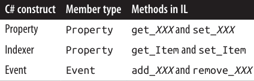

فصل هجدهم: بازتاب (Reflection) و متادیتا
همانطور که در فصل ۱۷ دیدیم، یک برنامهی C# به یک Assembly کامپایل میشود که شامل متادیتا (Metadata)، کد کامپایلشده و منابع (Resources) است. بررسی متادیتا و کد کامپایلشده در زمان اجرا را Reflection (بازتاب) مینامند.
کد کامپایلشده در یک Assembly تقریباً تمام محتوای کد منبع اصلی را در بر دارد. با این حال، برخی اطلاعات مانند نام متغیرهای محلی، توضیحات (Comments) و دستورهای پیشپردازنده (Preprocessor Directives) از دست میروند. اما بازتاب به ما امکان دسترسی به تقریباً تمام موارد دیگر را میدهد—حتی تا حدی که میتوان یک Decompiler (دیکامپایلر) نوشت. 🔎
بسیاری از سرویسهای موجود در .NET و در دسترس از طریق C# (مانند Dynamic Binding، Serialization و Data Binding) به وجود متادیتا وابسته هستند. همچنین برنامههای شما نیز میتوانند از این متادیتا استفاده کنند و حتی آن را با اطلاعات جدید از طریق Custom Attributes گسترش دهند. فضای نام System.Reflection شامل API مربوط به Reflection است. علاوه بر این، در زمان اجرا میتوان متادیتا و دستورالعملهای اجرایی جدیدی در سطح Intermediate Language (IL) با استفاده از کلاسهای موجود در فضای نام System.Reflection.Emit ایجاد کرد.
نمونههای این فصل فرض میکنند که شما فضای نامهای System و System.Reflection و همچنین System.Reflection.Emit را وارد کردهاید.
وقتی در این فصل از اصطلاح «بهصورت دینامیکی» (Dynamically) استفاده میکنیم، منظور این است که عملی را با Reflection انجام دهیم که ایمنی نوع (Type Safety) آن فقط در زمان اجرا کنترل میشود. این موضوع از نظر اصول مشابه Dynamic Binding در C# با کلیدواژهی dynamic است، اما مکانیزم و عملکرد آن متفاوت است.
- Dynamic Binding استفادهی آسانتری دارد و از Dynamic Language Runtime (DLR) برای سازگاری با زبانهای پویا استفاده میکند.
- Reflection نسبت به آن کمی دستوپاگیرتر است، اما انعطاف بیشتری در ارتباط با CLR ارائه میدهد.
برای مثال، Reflection به شما اجازه میدهد: ✔️ فهرستی از Types و Members دریافت کنید. ✔️ یک شیء را با نامی که از یک رشته (String) میآید بسازید. ✔️ در لحظه (On the fly) Assembly تولید کنید.
🔍 Reflecting and Activating Types
در این بخش بررسی میکنیم که چگونه میتوان یک Type را به دست آورد، متادیتای آن را بررسی کرد و از آن برای ایجاد دینامیکی یک شیء استفاده نمود.
📌 Obtaining a Type
یک نمونه از System.Type نمایانگر متادیتای یک Type است. از آنجا که Type بسیار پرکاربرد است، در فضای نام System قرار دارد، نه در System.Reflection.
روشهای بهدستآوردن یک نمونهی System.Type:
۱. فراخوانی متد GetType روی هر شیء:
Type t1 = DateTime.Now.GetType(); // Type بدستآمده در زمان اجرا
۲. استفاده از عملگر typeof در C#:
Type t2 = typeof(DateTime); // Type بدستآمده در زمان کامپایل
با استفاده از typeof میتوانید Type آرایهها و Typeهای جنریک را نیز بگیرید:
Type t3 = typeof(DateTime[]); // آرایه یکبعدی
Type t4 = typeof(DateTime[,]); // آرایه دوبعدی
Type t5 = typeof(Dictionary<int,int>); // جنریک بسته (Closed Generic Type)
Type t6 = typeof(Dictionary<,>); // جنریک باز (Unbound Generic Type)
۳. دریافت Type از طریق نام (Name): اگر یک مرجع به Assembly داشته باشید:
Type t = Assembly.GetExecutingAssembly().GetType("Demos.TestProgram");
اگر Assembly را نداشته باشید، میتوانید از Assembly Qualified Name استفاده کنید (نام کامل Type بههمراه نام کامل یا جزئی Assembly). در این حالت Assembly بهطور ضمنی بارگذاری میشود:
Type t = Type.GetType("System.Int32, System.Private.CoreLib");
پس از در اختیار داشتن یک شیء System.Type، میتوانید با استفاده از ویژگیهای آن به اطلاعاتی مانند نام، Assembly، Base Type، سطح دسترسی (Visibility) و ... دسترسی داشته باشید:
Type stringType = typeof(string);
string name = stringType.Name; // String
Type baseType = stringType.BaseType; // typeof(Object)
Assembly assem = stringType.Assembly; // System.Private.CoreLib
bool isPublic = stringType.IsPublic; // true
یک شیء از نوع System.Type در واقع پنجرهای به تمام متادیتای مربوط به آن Type و Assembly حاوی آن است.
System.Typeیک کلاس Abstract است، بنابراین عملگرtypeofدر واقع یک زیرکلاس از Type را برمیگرداند. زیرکلاسی که CLR استفاده میکند داخلی (Internal) بوده و نام آن RuntimeType است.
📘 TypeInfo
اگر شما هدفگذاری روی .NET Core 1.x (یا پروفایلهای قدیمیتر Windows Store) داشته باشید، بسیاری از اعضای Type در دسترس نیستند. این اعضا به جای آن در کلاسی به نام TypeInfo ارائه میشوند که از طریق فراخوانی GetTypeInfo بهدست میآید.
برای اجرای مثال قبلی در چنین محیطی، کد شما اینگونه خواهد بود:
Type stringType = typeof(string);
string name = stringType.Name;
Type baseType = stringType.GetTypeInfo().BaseType;
Assembly assem = stringType.GetTypeInfo().Assembly;
bool isPublic = stringType.GetTypeInfo().IsPublic;
کلاس TypeInfo در .NET Core 2 و 3 و .NET 5+ (و همچنین در .NET Framework 4.5+ و تمامی نسخههای .NET Standard) نیز وجود دارد. بنابراین کد بالا تقریباً بهطور جهانی (Universal) قابل اجراست.
همچنین TypeInfo ویژگیها و متدهای اضافی برای بازتاب روی اعضا (Reflecting over Members) در اختیار قرار میدهد.
📦 بهدستآوردن انواع آرایهها (Obtaining Array Types)
همانطور که دیدیم، typeof و GetType با آرایهها کار میکنند. علاوه بر این میتوانید با فراخوانی MakeArrayType روی نوع المنت (Element Type)، یک نوع آرایه بسازید:
Type simpleArrayType = typeof(int).MakeArrayType();
Console.WriteLine(simpleArrayType == typeof(int[])); // True
برای ایجاد آرایههای چندبعدی، کافی است یک آرگومان عدد صحیح به MakeArrayType بدهید:
Type cubeType = typeof(int).MakeArrayType(3); // آرایه سهبعدی (شکل مکعب)
Console.WriteLine(cubeType == typeof(int[,,])); // True
متد GetElementType عمل معکوس را انجام میدهد: نوع المنت یک آرایه را بازمیگرداند:
Type e = typeof(int[]).GetElementType(); // e == typeof(int)
متد GetArrayRank تعداد ابعاد یک آرایه مستطیلی را برمیگرداند:
int rank = typeof(int[,,]).GetArrayRank(); // 3
🧩 بهدستآوردن نوعهای تو در تو (Obtaining Nested Types)
برای گرفتن نوعهای تو در تو (Nested Types)، متد GetNestedTypes را روی نوع حاوی (Containing Type) فراخوانی کنید:
foreach (Type t in typeof(System.Environment).GetNestedTypes())
Console.WriteLine(t.FullName);
خروجی:
System.Environment+SpecialFolder
یا به روش دیگر:
foreach (TypeInfo t in typeof(System.Environment)
.GetTypeInfo().DeclaredNestedTypes)
Debug.WriteLine(t.FullName);
⚠️ تنها نکته این است که CLR یک نوع تو در تو را با سطوح دسترسی ویژه «Nested» در نظر میگیرد:
Type t = typeof(System.Environment.SpecialFolder);
Console.WriteLine(t.IsPublic); // False
Console.WriteLine(t.IsNestedPublic); // True
🏷 نام انواع (Type Names)
یک Type دارای ویژگیهای Namespace، Name و FullName است. در بیشتر موارد، FullName ترکیبی از دو مورد اول است:
Type t = typeof(System.Text.StringBuilder);
Console.WriteLine(t.Namespace); // System.Text
Console.WriteLine(t.Name); // StringBuilder
Console.WriteLine(t.FullName); // System.Text.StringBuilder
🔑 دو استثنا وجود دارد:
- نوعهای تو در تو (Nested Types)
- نوعهای جنریک بسته (Closed Generic Types)
همچنین ویژگی AssemblyQualifiedName وجود دارد که FullName را بههمراه نام Assembly برمیگرداند. این همان رشتهای است که میتوانید به Type.GetType بدهید و بهطور منحصربهفرد یک Type را در محدودهی بارگذاری پیشفرض مشخص میکند.
🔗 نام نوعهای تو در تو (Nested Type Names)
در نوعهای تو در تو، نوع حاوی تنها در FullName ظاهر میشود:
Type t = typeof(System.Environment.SpecialFolder);
Console.WriteLine(t.Namespace); // System
Console.WriteLine(t.Name); // SpecialFolder
Console.WriteLine(t.FullName); // System.Environment+SpecialFolder
🔹 علامت + نوع حاوی را از فضای نام تو در تو جدا میکند.
🌀 نام نوعهای جنریک (Generic Type Names)
نام نوعهای جنریک با علامت بکتیک (`) و سپس تعداد پارامترهای نوع مشخص میشوند.
- اگر جنریک باز (Unbound) باشد، این قانون برای
NameوFullNameاعمال میشود:
Type t = typeof(Dictionary<,>);
Console.WriteLine(t.Name); // Dictionary`2
Console.WriteLine(t.FullName); // System.Collections.Generic.Dictionary`2
- اگر جنریک بسته (Closed) باشد، تنها
FullNameیک بخش اضافی طولانی شامل نام کامل Assembly هر پارامتر نوع را دریافت میکند:
Console.WriteLine(typeof(Dictionary<int,string>).FullName);
خروجی:
System.Collections.Generic.Dictionary`2[
[System.Int32, System.Private.CoreLib, Version=4.0.0.0, Culture=neutral, PublicKeyToken=7cec85d7bea7798e],
[System.String, System.Private.CoreLib, Version=4.0.0.0, Culture=neutral, PublicKeyToken=7cec85d7bea7798e]
]
این تضمین میکند که AssemblyQualifiedName اطلاعات کافی برای شناسایی کامل نوع جنریک و پارامترهای آن دارد.
📚 نام انواع آرایه و پوینتر (Array and Pointer Type Names)
آرایهها با همان پسوندی نمایش داده میشوند که در عبارت typeof استفاده میکنید:
Console.WriteLine(typeof(int[]).Name); // Int32[]
Console.WriteLine(typeof(int[,]).Name); // Int32[,]
Console.WriteLine(typeof(int[,]).FullName);// System.Int32[,]
نوعهای پوینتر مشابه هستند:
Console.WriteLine(typeof(byte*).Name); // Byte*
🔄 نام انواع پارامترهای ref و out
یک Type که نمایندهی پارامتر ref یا out باشد، پسوند & دارد:
public void RefMethod(ref int p)
{
Type t = MethodInfo.GetCurrentMethod().GetParameters()[0].ParameterType;
Console.WriteLine(t.Name); // Int32&
}
(جزئیات بیشتر در بخش «Reflecting and Invoking Members» در صفحه 813 توضیح داده میشود.)
🧬 Base Types و Interfaces
کلاس Type یک ویژگی به نام BaseType دارد:
Type base1 = typeof(System.String).BaseType;
Type base2 = typeof(System.IO.FileStream).BaseType;
Console.WriteLine(base1.Name); // Object
Console.WriteLine(base2.Name); // Stream
متد GetInterfaces رابطهایی (Interfaces) را که یک Type پیادهسازی میکند برمیگرداند:
foreach (Type iType in typeof(Guid).GetInterfaces())
Console.WriteLine(iType.Name);
خروجی:
IFormattable
IComparable
IComparable`1
IEquatable`1
(متد GetInterfaceMap یک ساختار بازمیگرداند که نشان میدهد هر عضو از یک Interface چگونه در یک کلاس یا Struct پیادهسازی شده است—نمونهی آن در بخش «Calling Static Virtual/Abstract Interface Members» در صفحه 826 آمده است.)
⚖️ معادلهای پویا برای عملگر is در C#
Reflection سه معادل پویا برای عملگر ایستای is در C# ارائه میدهد:
IsInstanceOfType→ یک Type و یک نمونه را میپذیرد.IsAssignableFromو (از .NET 5)IsAssignableTo→ دو Type را میپذیرند.
مثال ۱
object obj = Guid.NewGuid();
Type target = typeof(IFormattable);
bool isTrue = obj is IFormattable; // عملگر ایستای C#
bool alsoTrue = target.IsInstanceOfType(obj); // معادل پویا
مثال ۲
Type target = typeof(IComparable), source = typeof(string);
Console.WriteLine(target.IsAssignableFrom(source)); // True
متد IsSubclassOf هم بر اساس همان اصل IsAssignableFrom کار میکند، با این تفاوت که Interfaceها را در نظر نمیگیرد.
🏗 ایجاد نمونه از انواع (Instantiating Types)
دو روش برای ایجاد دینامیکی یک شیء از روی نوع (Type) وجود دارد:
- فراخوانی متد استاتیک
Activator.CreateInstance - فراخوانی
Invokeروی یک شیء از نوعConstructorInfoکه از متدGetConstructorروی یک Type بهدست آمده است (برای سناریوهای پیشرفته)
🔹 استفاده از Activator.CreateInstance
متد Activator.CreateInstance یک Type و آرگومانهای اختیاری دریافت میکند و آنها را به سازنده (Constructor) پاس میدهد:
int i = (int)Activator.CreateInstance(typeof(int));
DateTime dt = (DateTime)Activator.CreateInstance(typeof(DateTime),
2000, 1, 1);
این متد گزینههای بیشتری نیز فراهم میکند، مانند مشخصکردن Assembly برای بارگذاری نوع یا امکان اتصال به سازندههای Nonpublic.
اگر CLR نتواند سازندهی مناسب پیدا کند، یک استثناء از نوع MissingMethodException پرتاب میشود. ⚠️
🔹 استفاده از ConstructorInfo.Invoke
گاهی اوقات باید از ConstructorInfo.Invoke استفاده کنید، بهویژه زمانی که مقدار آرگومانها نمیتواند بین سازندههای Overload تمایز ایجاد کند.
فرض کنید کلاس X دو سازنده دارد:
- یکی با پارامتر
string - دیگری با پارامتر
StringBuilder
در این حالت اگر مقدار null را به Activator.CreateInstance بدهید، نتیجه مبهم خواهد بود. پس باید مستقیماً از ConstructorInfo استفاده کنید:
// گرفتن سازندهای که یک پارامتر از نوع string دارد:
ConstructorInfo ci = typeof(X).GetConstructor(new[] { typeof(string) });
// ساخت شیء با همان overload و پاس دادن null:
object foo = ci.Invoke(new object[] { null });
اگر هدف شما .NET Core 1 یا پروفایلهای قدیمی Windows Store باشد:
ConstructorInfo ci = typeof(X).GetTypeInfo().DeclaredConstructors
.FirstOrDefault(c =>
c.GetParameters().Length == 1 &&
c.GetParameters()[0].ParameterType == typeof(string));
برای گرفتن سازندههای Nonpublic باید از BindingFlags استفاده کنید (توضیح در بخش «Accessing Nonpublic Members» در صفحه 822).
⚡ نکتهی عملکردی
ایجاد نمونهی دینامیکی چند میکروثانیه به زمان ساخت شیء اضافه میکند. این مقدار در مقیاس نسبی زیاد است، چون CLR بهطور عادی بسیار سریع در ایجاد اشیاء عمل میکند (یک new ساده روی یک کلاس کوچک در حد چند نانوسانیه زمان میبرد).
📚 ایجاد دینامیکی آرایهها و جنریکها
برای ایجاد آرایهها بهصورت دینامیکی، ابتدا باید MakeArrayType را فراخوانی کنید.
ایجاد نوعهای جنریک نیز ممکن است (در بخش بعدی توضیح داده میشود).
🪝 ایجاد دینامیکی Delegateها
برای ایجاد Delegate بهصورت دینامیکی، متد Delegate.CreateDelegate را فراخوانی کنید. مثال زیر ایجاد هر دو نوع Delegate (استاتیک و Instance) را نشان میدهد:
class Program
{
delegate int IntFunc(int x);
static int Square(int x) => x * x; // متد استاتیک
int Cube (int x) => x * x * x; // متد Instance
static void Main()
{
Delegate staticD = Delegate.CreateDelegate(
typeof(IntFunc), typeof(Program), "Square");
Delegate instanceD = Delegate.CreateDelegate(
typeof(IntFunc), new Program(), "Cube");
Console.WriteLine(staticD.DynamicInvoke(3)); // 9
Console.WriteLine(instanceD.DynamicInvoke(3)); // 27
}
}
برای فراخوانی Delegate ایجادشده، میتوانید از DynamicInvoke استفاده کنید (همانطور که در مثال بالا دیدیم) یا آن را به نوع Delegate اصلی Cast کنید:
IntFunc f = (IntFunc)staticD;
Console.WriteLine(f(3)); // 9 (اما بسیار سریعتر!)
همچنین میتوانید بهجای نام متد، یک MethodInfo به CreateDelegate بدهید. جزئیات مربوط به MethodInfo در بخش “Reflecting and Invoking Members” در صفحه 813 آمده است، همراه با دلیل اینکه چرا بهتر است یک Delegate ایجادشدهی دینامیکی را دوباره به نوع Delegate ایستای خودش Cast کنیم.
🧩 انواع جنریک (Generic Types)
یک شیء از نوع Type میتواند نشاندهندهی یک نوع جنریک بسته (Closed) یا باز (Unbound) باشد.
همانند زمان کامپایل، فقط نوع جنریک بسته را میتوان نمونهسازی کرد، در حالیکه نوع باز غیرقابل نمونهسازی است:
Type closed = typeof(List<int>);
List<int> list = (List<int>)Activator.CreateInstance(closed); // OK ✅
Type unbound = typeof(List<>);
object anError = Activator.CreateInstance(unbound); // خطای زمان اجرا ❌
برای تبدیل یک نوع جنریک باز به بسته از متد MakeGenericType استفاده میکنیم:
Type unbound = typeof(List<>);
Type closed = unbound.MakeGenericType(typeof(int));
برعکس آن، متد GetGenericTypeDefinition یک نوع بسته را دوباره به شکل باز برمیگرداند:
Type unbound2 = closed.GetGenericTypeDefinition(); // unbound == unbound2
🔎 ویژگیهای کلیدی:
IsGenericType→ بررسی میکند که آیا یک نوع، جنریک است یا نه.IsGenericTypeDefinition→ بررسی میکند که آیا نوع، باز (unbound) است یا نه.
مثال بررسی نوع Nullable:
Type nullable = typeof(bool?);
Console.WriteLine(
nullable.IsGenericType &&
nullable.GetGenericTypeDefinition() == typeof(Nullable<>)); // True
همچنین، متد GetGenericArguments آرگومانهای نوع را بازمیگرداند:
Console.WriteLine(closed.GetGenericArguments()[0]); // System.Int32
Console.WriteLine(nullable.GetGenericArguments()[0]); // System.Boolean
Console.WriteLine(unbound.GetGenericArguments()[0]); // T (پلایسهولدر)
📌 در زمان اجرا، تمام انواع جنریک یا باز (Unbound) هستند یا بسته (Closed).
- حالت باز فقط در موارد نادری مثل
typeof(Foo<>)رخ میدهد. - هیچوقت نوع «باز» واقعی در زمان اجرا وجود ندارد؛ کامپایلر همه را به نوع بسته تبدیل میکند.
مثال زیر همیشه False چاپ میکند:
class Foo<T>
{
public void Test()
=> Console.Write(GetType().IsGenericTypeDefinition);
}
🔍 بازتاب اعضا (Reflecting and Invoking Members)
برای بازتاب اعضای یک نوع، از متد GetMembers استفاده میکنیم.
class Walnut
{
private bool cracked;
public void Crack() { cracked = true; }
}
MemberInfo[] members = typeof(Walnut).GetMembers();
foreach (MemberInfo m in members)
Console.WriteLine(m);
نتیجه:
Void Crack()
System.Type GetType()
System.String ToString()
Boolean Equals(System.Object)
Int32 GetHashCode()
Void .ctor()
🔹 TypeInfo و بازتاب اعضا
کلاس TypeInfo یک پروتکل سادهتر برای بازتاب اعضا ارائه میدهد.
- به جای متدهایی مثل
GetMembersکه آرایه بازمیگردانند، این کلاس ویژگیهایی از نوعIEnumerable<T>ارائه میدهد که معمولاً با LINQ استفاده میشوند.
مثال:
IEnumerable<MemberInfo> members =
typeof(Walnut).GetTypeInfo().DeclaredMembers;
نتیجه (برخلاف GetMembers که اعضای ارثبردهشده را هم برمیگرداند):
Void Crack()
Void .ctor()
Boolean cracked
همچنین ویژگیهای خاصی برای گرفتن نوع مشخصی از اعضا وجود دارد (مثل DeclaredMethods, DeclaredProperties و غیره).
برای گرفتن یک متد خاص با نام (اما بدون امکان تعیین پارامترها)، از GetDeclaredMethod استفاده میشود.
برای متدهای overload باید از LINQ استفاده کرد:
MethodInfo method = typeof(int).GetTypeInfo().DeclaredMethods
.FirstOrDefault(m => m.Name == "ToString" &&
m.GetParameters().Length == 0);
🔹 جزئیات بیشتر در مورد GetMembers
- بدون آرگومان → تمام اعضای public نوع و پایههایش برگردانده میشوند.
GetMember("Crack")→ عضو خاصی را با نام میگیرد (اما بهصورت آرایه برمیگرداند چون ممکن است overload داشته باشد).
MemberInfo[] m = typeof(Walnut).GetMember("Crack");
Console.WriteLine(m[0]); // Void Crack()
MemberInfo.MemberType یک enum از نوع MemberTypes است که مقادیر زیر را دارد:
All, Constructor, Custom, Event, Field, Method,
NestedType, Property, TypeInfo
میتوان با استفاده از این enum نتیجهی متد GetMembers را محدود کرد یا مستقیماً از متدهای اختصاصی مثل GetMethods, GetFields, GetProperties و ... استفاده کرد.
✅ توصیه: همیشه هنگام گرفتن اعضا، تا جای ممکن دقیق باشید. مثلاً هنگام گرفتن متدی با نام خاص، نوع همهی پارامترها را مشخص کنید تا اگر بعداً متد overload شد، کد شما همچنان درست کار کند.
🔹 DeclaringType و ReflectedType
یک شیء MemberInfo دو ویژگی دارد:
DeclaringType→ نوعی که عضو را تعریف کرده.ReflectedType→ نوعی که متدGetMembersروی آن فراخوانی شده.
مثال:
MethodInfo test = typeof(Program).GetMethod("ToString");
MethodInfo obj = typeof(object).GetMethod("ToString");
Console.WriteLine(test.DeclaringType); // System.Object
Console.WriteLine(obj.DeclaringType); // System.Object
Console.WriteLine(test.ReflectedType); // Program
Console.WriteLine(obj.ReflectedType); // System.Object
Console.WriteLine(test == obj); // False
در اینجا، تفاوت فقط به خاطر Reflection API است؛ در حقیقت Program هیچ متد جدیدی به نام ToString ندارد.
برای بررسی اینکه آیا دو متد واقعاً یکی هستند:
Console.WriteLine(test.MethodHandle == obj.MethodHandle); // True
Console.WriteLine(test.MetadataToken == obj.MetadataToken
&& test.Module == obj.Module); // True
📝 نکات پایانی
MethodHandle→ برای هر متد متمایز در یک پروسه یکتا است.MetadataToken→ برای تمام انواع و اعضا در یک Assembly Module یکتا است.MemberInfoمتدهایی برای دریافت Attributeهای سفارشی هم دارد (بخش «Retrieving Attributes at Runtime» در صفحه 832).- متد
MethodBase.GetCurrentMethod، متد در حال اجرا را بازمیگرداند.
📌 در نهایت، MemberInfo خودش انتزاعی است و پایهای برای انواع دیگر است (به شکل Figure 18-1 در کتاب).

شما میتوانید یک MemberInfo را بر اساس ویژگی MemberType آن به زیرکلاس مناسبش Cast کنید. اگر یک عضو را از طریق GetMethod, GetField, GetProperty, GetEvent, GetConstructor یا GetNestedType (یا نسخههای جمع آنها) به دست آورده باشید، نیازی به Cast نیست.

هر زیرکلاس از MemberInfo مجموعهای غنی از ویژگیها و متدها دارد که تمام جنبههای متادیتای یک عضو را آشکار میکند. این شامل مواردی مثل سطح دسترسی (visibility)، اصلاحکنندهها (modifiers)، آرگومانهای نوع جنریک، پارامترها، نوع بازگشتی و ویژگیهای سفارشی (custom attributes) میشود.
نمونهای از استفاده از GetMethod:
MethodInfo m = typeof (Walnut).GetMethod ("Crack");
Console.WriteLine (m); // Void Crack()
Console.WriteLine (m.ReturnType); // System.Void
تمام نمونههای *Info توسط Reflection API در اولین استفاده کش میشوند:
MethodInfo method = typeof (Walnut).GetMethod ("Crack");
MemberInfo member = typeof (Walnut).GetMember ("Crack")[0];
Console.Write (method == member); // True
این کش شدن علاوه بر حفظ هویت شیء، کارایی را هم در یک API نسبتاً کند بهبود میدهد.
اعضای C# در برابر اعضای CLR ⚖️
جدول قبلی نشان داد که برخی از ساختارهای C# بهطور مستقیم و یکبهیک (1:1) با ساختارهای CLR متناظر نیستند. این منطقی است چون CLR و Reflection API برای تمام زبانهای .NET طراحی شدهاند—حتی میتوان از Reflection در Visual Basic هم استفاده کرد.
برخی ساختارهای C# (مثل indexer، enum، operator و finalizer) در CLR به شکل متفاوتی پیادهسازی میشوند:
- یک C# indexer به پراپرتیای ترجمه میشود که یک یا چند آرگومان میگیرد و با
[DefaultMember]مشخص میشود. - یک C# enum به زیرکلاسی از
System.Enumترجمه میشود که برای هر عضو یک فیلد استاتیک دارد. - یک C# operator به متدی استاتیک با نامی خاص (شروعشده با
op_مثل"op_Addition") ترجمه میشود. - یک C# finalizer به متدی ترجمه میشود که
Finalizeرا override میکند.
❗ پیچیدگی دیگر این است که پراپرتیها و رویدادها در واقع شامل دو چیز هستند:
- متادیتایی که پراپرتی یا رویداد را توصیف میکند (در قالب
PropertyInfoیاEventInfo) - یک یا دو متد پشتیبان (backing methods)
در برنامه C#، این متدهای پشتیبان داخل تعریف پراپرتی یا رویداد قرار دارند. اما وقتی به IL کامپایل میشود، این متدها مثل متدهای عادی دیده میشوند و میتوان آنها را فراخوانی کرد.
به همین دلیل GetMethods علاوه بر متدهای عادی، متدهای پشتیبان پراپرتی و رویدادها را هم برمیگرداند:
class Test { public int X { get { return 0; } set {} } }
void Demo()
{
foreach (MethodInfo mi in typeof (Test).GetMethods())
Console.Write (mi.Name + " ");
}
// OUTPUT:
// get_X set_X GetType ToString Equals GetHashCode
برای شناسایی این متدها میتوان از ویژگی IsSpecialName در MethodInfo استفاده کرد. مقدار آن برای متدهای پراپرتی، ایندکسر، رویداد و عملگرها true است. برای متدهای معمولی C# (و متد Finalize در صورت وجود finalizer) مقدار آن false خواهد بود.
در ادامه، متدهای پشتیبانی که C# تولید میکند را خواهیم دید.

هر متد پشتیبان (backing method) شیء مخصوص به خودش از نوع MethodInfo دارد. میتوانید به این صورت به آنها دسترسی پیدا کنید:
PropertyInfo pi = typeof (Console).GetProperty ("Title");
MethodInfo getter = pi.GetGetMethod(); // get_Title
MethodInfo setter = pi.GetSetMethod(); // set_Title
MethodInfo[] both = pi.GetAccessors(); // Length==2
برای رویدادها (Event)، متدهای GetAddMethod و GetRemoveMethod کار مشابهی برای EventInfo انجام میدهند.
برای حرکت در جهت عکس—یعنی رفتن از یک MethodInfo به PropertyInfo یا EventInfo مربوطه—باید یک کوئری انجام دهید. در اینجا LINQ برای این کار ایدئال است:
PropertyInfo p = mi.DeclaringType.GetProperties()
.First (x => x.GetAccessors (true).Contains (mi));
پراپرتیهای Init-only 🛠️
پراپرتیهای Init-only که در C# 9 معرفی شدند، میتوانند از طریق object initializer مقداردهی شوند، اما بعد از آن توسط کامپایلر فقط بهعنوان فقط-خواندنی در نظر گرفته میشوند.
از دید CLR، یک init accessor درست مثل یک set accessor عادی است، با این تفاوت که یک فلگ خاص روی نوع بازگشتی متد set اعمال میشود (این فلگ برای کامپایلر معنا دارد).
نکته جالب این است که این فلگ به شکل یک attribute قراردادی رمزگذاری نشده است. در عوض، از یک مکانیزم کمتر شناختهشده به نام modreq استفاده میکند. این باعث میشود که نسخههای قدیمیتر کامپایلر C# (که modreq جدید را نمیشناسند) آن accessor را نادیده بگیرند، بهجای اینکه پراپرتی را قابل نوشتن در نظر بگیرند.
نام modreq برای accessorهای init-only برابر است با IsExternalInit و میتوانید به این صورت آن را بررسی کنید:
bool IsInitOnly (PropertyInfo pi) => pi
.GetSetMethod().ReturnParameter.GetRequiredCustomModifiers()
.Any (t => t.Name == "IsExternalInit");
NullabilityInfoContext ☑️
از .NET 6 به بعد، میتوانید با کلاس NullabilityInfoContext اطلاعاتی درباره annotationهای nullability برای فیلد، پراپرتی، رویداد یا پارامترها به دست آورید:
void PrintPropertyNullability (PropertyInfo pi)
{
var info = new NullabilityInfoContext().Create (pi);
Console.WriteLine (pi.Name + " read " + info.ReadState);
Console.WriteLine (pi.Name + " write " + info.WriteState);
// از info.Element برای گرفتن اطلاعات nullability عناصر آرایه استفاده کنید
}
اعضای نوع جنریک 🔁
میتوانید متادیتای اعضا را هم برای انواع جنریک باز (unbound generic types) و هم برای انواع جنریک بسته (closed generic types) به دست آورید:
PropertyInfo unbound = typeof (IEnumerator<>) .GetProperty ("Current");
PropertyInfo closed = typeof (IEnumerator<int>).GetProperty ("Current");
Console.WriteLine (unbound); // T Current
Console.WriteLine (closed); // Int32 Current
Console.WriteLine (unbound.PropertyType.IsGenericParameter); // True
Console.WriteLine (closed.PropertyType.IsGenericParameter); // False
شیءهای MemberInfo که از انواع جنریک باز و بسته بازگردانده میشوند همیشه متمایز هستند، حتی اگر امضای اعضا شامل پارامترهای نوع جنریک نباشد:
PropertyInfo unbound = typeof (List<>) .GetProperty ("Count");
PropertyInfo closed = typeof (List<int>).GetProperty ("Count");
Console.WriteLine (unbound); // Int32 Count
Console.WriteLine (closed); // Int32 Count
Console.WriteLine (unbound == closed); // False
Console.WriteLine (unbound.DeclaringType.IsGenericTypeDefinition); // True
Console.WriteLine (closed.DeclaringType.IsGenericTypeDefinition); // False
❌ اعضای انواع جنریک باز (unbound generic types) را نمیتوان بهصورت داینامیک invoke کرد.
فراخوانی پویا اعضا ⚡
فراخوانی پویا یک عضو میتواند با استفاده از کتابخانهی Uncapsulator (متنباز و موجود در NuGet و GitHub) بسیار راحتتر انجام شود. این کتابخانه که توسط نویسندهی کتاب نوشته شده، یک API روان برای فراخوانی اعضای عمومی و غیرعمومی از طریق Reflection، با استفاده از یک dynamic binder سفارشی ارائه میدهد.
پس از آنکه یک شیء از نوع MethodInfo، PropertyInfo یا FieldInfo داشته باشید، میتوانید آن را بهصورت پویا فراخوانی کنید یا مقدارش را بگیرید/تعیین کنید. این کار late binding نام دارد، زیرا شما انتخاب میکنید کدام عضو در زمان اجرا (runtime) فراخوانی شود، نه در زمان کامپایل.
برای نمونه، این کد با static binding عادی نوشته شده است:
string s = "Hello";
int length = s.Length;
و همین کار با late binding پویا چنین خواهد بود:
object s = "Hello";
PropertyInfo prop = s.GetType().GetProperty ("Length");
int length = (int) prop.GetValue (s, null); // 5
متدهای GetValue و SetValue مقدار یک PropertyInfo یا FieldInfo را میگیرند یا تنظیم میکنند. آرگومان اول نمونه (instance) است، که برای اعضای static میتواند null باشد.
برای دسترسی به Indexer نیز درست مثل پراپرتیای به نام "Item" رفتار میشود، با این تفاوت که مقادیر indexer بهعنوان آرگومان دوم به GetValue یا SetValue داده میشوند.
برای فراخوانی پویا یک متد، متد Invoke را روی یک MethodInfo صدا میزنید و یک آرایه از آرگومانها به آن میدهید. اگر نوع یکی از آرگومانها اشتباه باشد، یک exception در زمان اجرا رخ خواهد داد. با فراخوانی پویا، ایمنی نوع در زمان کامپایل را از دست میدهید، اما همچنان ایمنی نوع در زمان اجرا را دارید (دقیقاً مثل استفاده از کلیدواژهی dynamic).
پارامترهای متد 📑
فرض کنید بخواهیم متد Substring رشته را پویا فراخوانی کنیم. در حالت عادی (static):
Console.WriteLine ("stamp".Substring(2)); // "amp"
معادل پویا با reflection و late binding:
Type type = typeof (string);
Type[] parameterTypes = { typeof (int) };
MethodInfo method = type.GetMethod ("Substring", parameterTypes);
object[] arguments = { 2 };
object returnValue = method.Invoke ("stamp", arguments);
Console.WriteLine (returnValue); // "amp"
از آنجا که متد Substring overload دارد، مجبور شدیم یک آرایه از نوع پارامترها بدهیم تا مشخص شود کدام نسخهی متد را میخواهیم. در غیر این صورت، GetMethod خطای AmbiguousMatchException خواهد داد.
متد GetParameters که در کلاس پایهی MethodBase (برای MethodInfo و ConstructorInfo) تعریف شده، اطلاعات متادیتا دربارهی پارامترها را برمیگرداند:
ParameterInfo[] paramList = method.GetParameters();
foreach (ParameterInfo x in paramList)
{
Console.WriteLine (x.Name); // startIndex
Console.WriteLine (x.ParameterType); // System.Int32
}
برخورد با پارامترهای ref و out 🔄
برای پاس دادن پارامترهای ref یا out، باید قبل از گرفتن متد، متد MakeByRefType را روی نوع صدا بزنید. برای نمونه، اجرای پویا کد زیر:
int x;
bool successfulParse = int.TryParse ("23", out x);
به شکل زیر خواهد بود:
object[] args = { "23", 0 };
Type[] argTypes = { typeof (string), typeof (int).MakeByRefType() };
MethodInfo tryParse = typeof (int).GetMethod ("TryParse", argTypes);
bool successfulParse = (bool) tryParse.Invoke (null, args);
Console.WriteLine (successfulParse + " " + args[1]); // True 23
همین روش برای هر دو نوع ref و out کار میکند.
بازیابی و فراخوانی متدهای جنریک 🔧
گاهی لازم است هنگام فراخوانی GetMethod نوع پارامترها را مشخص کنیم تا بین متدهای overload تمایز قائل شویم. اما امکان مشخص کردن نوعهای جنریک بهطور مستقیم وجود ندارد.
برای نمونه، کلاس System.Linq.Enumerable دو overload برای متد Where دارد:
public static IEnumerable<TSource> Where<TSource>
(this IEnumerable<TSource> source, Func<TSource, bool> predicate);
public static IEnumerable<TSource> Where<TSource>
(this IEnumerable<TSource> source, Func<TSource, int, bool> predicate);
برای بازیابی یک overload خاص، باید همهی متدها را بگیریم و سپس مورد دلخواه را دستی انتخاب کنیم. کوئری زیر overload اول را برمیگرداند:
from m in typeof (Enumerable).GetMethods()
where m.Name == "Where" && m.IsGenericMethod
let parameters = m.GetParameters()
where parameters.Length == 2
let genArg = m.GetGenericArguments().First()
let enumerableOfT = typeof (IEnumerable<>).MakeGenericType (genArg)
let funcOfTBool = typeof (Func<,>).MakeGenericType (genArg, typeof (bool))
where parameters[0].ParameterType == enumerableOfT
&& parameters[1].ParameterType == funcOfTBool
select m
فراخوانی .Single() روی این کوئری، شیء MethodInfo درست با پارامترهای نوع باز (unbound) را برمیگرداند. گام بعدی بستن پارامترهای نوعی است، با استفاده از MakeGenericMethod:
var closedMethod = unboundMethod.MakeGenericMethod (typeof (int));
در این حالت، نوع TSource با int بسته شده و میتوانیم Enumerable.Where را با منبعی از نوع IEnumerable<int> و شرطی از نوع Func<int,bool> صدا بزنیم:
int[] source = { 3, 4, 5, 6, 7, 8 };
Func<int, bool> predicate = n => n % 2 == 1; // فقط اعداد فرد
var query = (IEnumerable<int>) closedMethod.Invoke
(null, new object[] { source, predicate });
foreach (int element in query) Console.Write (element + "|"); // 3|5|7|
استفاده از System.Linq.Expressions 🎭
اگر از API مربوط به System.Linq.Expressions برای ساخت داینامیک expressionها استفاده کنید (فصل ۸)، دیگر نیازی به این کارهای دستی برای مشخص کردن متد جنریک ندارید. متد Expression.Call overloadهایی دارد که اجازه میدهد نوعهای بستهی جنریک را مشخص کنید:
int[] source = { 3, 4, 5, 6, 7, 8 };
Func<int, bool> predicate = n => n % 2 == 1;
var sourceExpr = Expression.Constant (source);
var predicateExpr = Expression.Constant (predicate);
var callExpression = Expression.Call (
typeof (Enumerable), "Where",
new[] { typeof (int) }, // نوع جنریک بسته
sourceExpr, predicateExpr);
استفاده از Delegate برای بهبود عملکرد ⚡
فراخوانیهای داینامیک نسبتاً کمکارآمد هستند و معمولاً overhead آنها در محدودهی چند میکروثانیه است. اگر یک متد را بارها در یک حلقه فراخوانی میکنید، میتوانید این overhead را به سطح نانوثانیه کاهش دهید، با ایجاد یک delegate داینامیک که به متد داینامیک شما اشاره میکند.
مثال زیر، متد Trim رشته را یک میلیون بار بدون overhead قابل توجه فراخوانی میکند:
delegate string StringToString(string s);
MethodInfo trimMethod = typeof(string).GetMethod("Trim", new Type[0]);
var trim = (StringToString) Delegate.CreateDelegate(typeof(StringToString), trimMethod);
for (int i = 0; i < 1000000; i++)
trim("test");
این روش سریعتر است زیرا late binding پرهزینه فقط یک بار اتفاق میافتد.
دسترسی به اعضای غیرعمومی 🔒
تمام متدهای بازتابی برای بررسی metadata (مثل GetProperty, GetField و غیره) overloadهایی دارند که یک BindingFlags میگیرند. این enum بهعنوان یک فیلتر عمل میکند و اجازه میدهد معیارهای انتخاب پیشفرض را تغییر دهید. رایجترین کاربرد، بازیابی اعضای غیرعمومی است (کار میکند فقط در اپلیکیشنهای دسکتاپ).
نمونه:
class Walnut
{
private bool cracked;
public void Crack() { cracked = true; }
public override string ToString() { return cracked.ToString(); }
}
Type t = typeof(Walnut);
Walnut w = new Walnut();
w.Crack();
FieldInfo f = t.GetField("cracked", BindingFlags.NonPublic | BindingFlags.Instance);
f.SetValue(w, false);
Console.WriteLine(w); // False
دسترسی به اعضای غیرعمومی با reflection قدرتمند است، اما خطرناک هم هست؛ زیرا میتوانید encapsulation را دور بزنید و وابستگی به پیادهسازی داخلی ایجاد کنید.
مقدمهای بر BindingFlags 🏷
BindingFlags برای ترکیب بیتی طراحی شده است. برای اینکه چیزی پیدا شود، باید یکی از چهار ترکیب زیر را انتخاب کنید:
BindingFlags.Public | BindingFlags.InstanceBindingFlags.Public | BindingFlags.StaticBindingFlags.NonPublic | BindingFlags.InstanceBindingFlags.NonPublic | BindingFlags.Static
NonPublic شامل internal، protected، protected internal و private میشود.
مثال:
// همه اعضای public و static
BindingFlags publicStatic = BindingFlags.Public | BindingFlags.Static;
MemberInfo[] members = typeof(object).GetMembers(publicStatic);
// همه اعضای nonpublic (static و instance)
BindingFlags nonPublicBinding = BindingFlags.NonPublic | BindingFlags.Static | BindingFlags.Instance;
members = typeof(object).GetMembers(nonPublicBinding);
پرچم DeclaredOnly اعضای ارثبری شده را کنار میگذارد، مگر اینکه override شده باشند. این flag کمی گیجکننده است زیرا مجموعه نتیجه را محدود میکند، در حالی که بقیه flagها مجموعه نتیجه را گسترش میدهند.
فراخوانی متدهای جنریک 🎯
شما نمیتوانید مستقیماً متدهای جنریک را Invoke کنید؛ مثال زیر خطا میدهد:
class Program
{
public static T Echo<T>(T x) { return x; }
static void Main()
{
MethodInfo echo = typeof(Program).GetMethod("Echo");
Console.WriteLine(echo.IsGenericMethodDefinition); // True
echo.Invoke(null, new object[] { 123 }); // Exception
}
}
راه حل: ابتدا متد MakeGenericMethod را روی MethodInfo صدا بزنید و نوعهای جنریک مشخص بدهید. این یک MethodInfo جدید برمیگرداند که میتوان آن را فراخوانی کرد:
MethodInfo echo = typeof(Program).GetMethod("Echo");
MethodInfo intEcho = echo.MakeGenericMethod(typeof(int));
Console.WriteLine(intEcho.IsGenericMethodDefinition); // False
Console.WriteLine(intEcho.Invoke(null, new object[] { 3 })); // 3
گاهی لازم است تا یک عضو از رابط جنریک را فراخوانی کنیم ولی پارامترهای نوع آن تا زمان اجرا مشخص نیستند. این مورد در طراحیهای ایدهآل کمیاب است، اما در عمل کاربرد دارد.
برای مثال، اگر بخواهیم نسخهای قدرتمندتر از ToString بسازیم که نتایج LINQ را نیز گسترش دهد:
public static string ToStringEx<T>(IEnumerable<T> sequence) { ... }
اما این محدود است. اگر sequence شامل مجموعههای تو در تو باشد، باید overloadهای متعدد بسازیم که عملی نیست. راه حل بهتر، نوشتن متدی است که هر شیء دلخواهی را پردازش کند:
public static string ToStringEx(object value)
{
if (value == null) return "<null>";
StringBuilder sb = new StringBuilder();
if (value is IList)
sb.AppendLine("A list with " + ((IList)value).Count + " items");
// بررسی IGrouping<,> با reflection
Type closedIGrouping = value.GetType().GetInterfaces()
.Where(t => t.IsGenericType &&
t.GetGenericTypeDefinition() == typeof(IGrouping<,>))
.FirstOrDefault();
if (closedIGrouping != null)
{
PropertyInfo pi = closedIGrouping.GetProperty("Key");
object key = pi.GetValue(value, null);
sb.Append("Group with key=" + key + ": ");
}
if (value is IEnumerable)
foreach (object element in (IEnumerable)value)
sb.Append(ToStringEx(element) + " ");
if (sb.Length == 0) sb.Append(value.ToString());
return "\r\n" + sb.ToString();
}
- برای
List<>میتوان ازIListغیرجنریک استفاده کرد، زیراList<>این رابط را پیادهسازی کرده است. - برای
IGrouping<,>باید از نوع بسته (closed generic) استفاده کنیم و سپس با reflection عضوKeyرا فراخوانی کنیم.
این روش پایدار است و چه IGrouping<,> بهصورت ضمنی یا صریح پیادهسازی شده باشد، کار میکند.
مثال استفاده:
Console.WriteLine(ToStringEx(new List<int> { 5, 6, 7 }));
Console.WriteLine(ToStringEx("xyyzzz".GroupBy(c => c)));
خروجی:
List of 3 items: 5 6 7
Group with key=x: x
Group with key=y: y y
Group with key=z: z z z
برای بازتاب یک Assembly بهصورت دینامیک، میتوان از GetType یا GetTypes استفاده کرد.
مثال دریافت نوع Demos.TestProgram از assembly جاری:
Type t = Assembly.GetExecutingAssembly().GetType("Demos.TestProgram");
یا از روی یک نوع موجود:
typeof(Foo).Assembly.GetType("Demos.TestProgram");
لیست تمام انواع در یک Assembly خارجی:
Assembly a = Assembly.LoadFile(@"e:\demo\mylib.dll");
foreach (Type t in a.GetTypes())
Console.WriteLine(t);
یا با TypeInfo:
Assembly a = typeof(Foo).GetTypeInfo().Assembly;
foreach (Type t in a.ExportedTypes)
Console.WriteLine(t);
توجه:
GetTypesوExportedTypesفقط انواع سطح بالا را برمیگردانند، انواع تو در تو را خیر. فراخوانیGetTypesروی یک اسمبلی چندماژوله، تمام نوعها را در همه ماژولها برمیگرداند. در نتیجه، میتوانید وجود ماژولها را نادیده بگیرید و یک اسمبلی را بهعنوان کانتینر نوعها در نظر بگیرید. با این حال، یک مورد وجود دارد که ماژولها اهمیت پیدا میکنند—و آن زمانی است که با توکنهای متادیتا (metadata tokens) کار میکنید.
توکن متادیتا یک عدد صحیح است که بهطور یکتا به یک نوع، عضو، رشته یا منبع در محدوده یک ماژول اشاره میکند. IL از توکنهای متادیتا استفاده میکند، بنابراین اگر در حال تحلیل IL هستید، باید بتوانید آنها را حل کنید. متدهای مرتبط در نوع Module تعریف شدهاند و شامل ResolveType، ResolveMember، ResolveString و ResolveSignature میشوند. در بخش پایانی این فصل، هنگام نوشتن disassembler دوباره به این موضوع بازمیگردیم.
میتوانید لیست همه ماژولهای یک اسمبلی را با فراخوانی GetModules بهدست آورید. همچنین میتوانید به ماژول اصلی یک اسمبلی مستقیماً از طریق ویژگی ManifestModule دسترسی داشته باشید.
کار با Attributes 🏷️
CLR اجازه میدهد متادیتای اضافی به نوعها، اعضا و اسمبلیها از طریق Attributes متصل شود. این مکانیزم باعث میشود برخی از عملکردهای مهم CLR (مانند شناسایی اسمبلی یا marshaling نوعها برای تعامل با native code) هدایت شوند و Attributes را به بخشی جداییناپذیر از برنامه تبدیل میکند.
یکی از ویژگیهای کلیدی Attributes این است که شما میتوانید Attributes خودتان را بنویسید و سپس مانند هر Attribute دیگری، آنها را برای “تزئین” یک عنصر کد با اطلاعات اضافی استفاده کنید. این اطلاعات اضافی در اسمبلی پایه کامپایل میشوند و میتوان آنها را در زمان اجرا با استفاده از reflection بازیابی کرد تا سرویسهایی بسازید که به صورت دکوراتوری و خودکار عمل میکنند، مانند تست واحد خودکار (automated unit testing).
سه نوع Attribute وجود دارد:
- Bit-mapped attributes
- Custom attributes
- Pseudocustom attributes
از میان اینها، تنها custom attributes قابل توسعه هستند.
اصطلاح «attribute» به تنهایی میتواند به هر سه نوع اشاره کند، اما در دنیای C# بیشتر به custom attributes یا pseudocustom attributes اشاره دارد.
Bit-mapped attributes (اصطلاح ما) به بیتهای اختصاصی در متادیتای نوع نگاشت میشوند. اکثر کلمات کلیدی modifier در C#، مانند public، abstract و sealed به Bit-mapped attributes تبدیل میشوند. این Attributes بسیار کارآمد هستند زیرا فضای کمی در متادیتا مصرف میکنند (معمولاً تنها یک بیت) و CLR میتواند آنها را با کمترین یا بدون هیچ واسطهای پیدا کند.
API reflection آنها را از طریق ویژگیهای اختصاصی روی Type (و سایر زیرکلاسهای MemberInfo) مانند IsPublic، IsAbstract و IsSealed نمایش میدهد. ویژگی Attributes یک enum با flag برمیگرداند که اکثر آنها را بهصورت یکجا توصیف میکند:
static void Main()
{
TypeAttributes ta = typeof(Console).Attributes;
MethodAttributes ma = MethodInfo.GetCurrentMethod().Attributes;
Console.WriteLine(ta + "\r\n" + ma);
}
نتیجه:
AutoLayout, AnsiClass, Class, Public, Abstract, Sealed, BeforeFieldInit
PrivateScope, Private, Static, HideBySig
در مقابل، custom attributes به یک Blob در متادیتای اصلی نوع متصل میشوند. همه Custom attributes توسط یک زیرکلاس از System.Attribute نمایش داده میشوند و برخلاف Bit-mapped attributes، قابل توسعه هستند. این Blob کلاس Attribute را شناسایی میکند و همچنین مقادیر هر آرگومان موقعیتی یا نامگذاریشدهای که هنگام اعمال Attribute مشخص شده را ذخیره میکند. Custom attributes که خودتان تعریف میکنید، از نظر معماری کاملاً مشابه آنهایی هستند که در کتابخانههای .NET تعریف شدهاند.
در فصل 4 توضیح داده شده است که چگونه میتوان Custom attributes را به یک نوع یا عضو در C# متصل کرد. مثال زیر، Attribute از پیش تعریفشده Obsolete را به کلاس Foo اعمال میکند:
[Obsolete] public class Foo { ... }
این به کامپایلر دستور میدهد که یک نمونه از ObsoleteAttribute را در متادیتای Foo قرار دهد، که سپس میتوان آن را در زمان اجرا با فراخوانی GetCustomAttributes روی یک Type یا MemberInfo بازیابی کرد.
Pseudocustom attributes ظاهر و عملکردی شبیه custom attributes استاندارد دارند. آنها توسط یک زیرکلاس از System.Attribute نمایش داده میشوند و به روش استاندارد متصل میشوند:
[System.Runtime.InteropServices.StructLayout(LayoutKind.Sequential)]
class SystemTime { ... }
تفاوت این است که کامپایلر یا CLR بهصورت داخلی، Pseudocustom attributes را با تبدیل آنها به Bit-mapped attributes بهینه میکند. نمونهها شامل StructLayout، In و Out هستند (فصل 24). Reflection، Pseudocustom attributes را از طریق ویژگیهای اختصاصی مانند IsLayoutSequential نمایش میدهد و در بسیاری از موارد، وقتی GetCustomAttributes فراخوانی شود، بهعنوان شیء System.Attribute نیز برمیگردند.
این بدان معناست که میتوانید تقریباً تفاوت بین pseudo- و non-pseudo custom attributes را نادیده بگیرید (استثنای مهم، زمانی است که از Reflection.Emit برای تولید نوعها بهصورت داینامیک در زمان اجرا استفاده میکنید؛ نگاه کنید به فصل «Emitting Assemblies and Types» صفحه 841).
AttributeUsage یک Attribute است که روی کلاسهای Attribute اعمال میشود و به کامپایلر میگوید چگونه باید Attribute هدف استفاده شود:
public sealed class AttributeUsageAttribute : Attribute
{
public AttributeUsageAttribute(AttributeTargets validOn);
public bool AllowMultiple { get; set; }
public bool Inherited { get; set; }
public AttributeTargets ValidOn { get; }
}
AllowMultipleمشخص میکند که آیا Attribute تعریفشده میتواند بیش از یک بار روی همان هدف اعمال شود یا خیر.Inheritedمشخص میکند که آیا Attribute اعمالشده روی یک کلاس پایه، به کلاسهای مشتق نیز اعمال شود (یا در مورد متدها، آیا Attribute اعمالشده روی متد virtual به متدهای overriding نیز منتقل شود).ValidOnمجموعه اهدافی را تعیین میکند که Attribute میتواند به آنها متصل شود، مانند کلاسها، اینترفیسها، Properties، متدها، پارامترها و غیره. این ویژگی هر ترکیبی از مقادیر enumAttributeTargetsرا میپذیرد، که شامل موارد زیر است:
All, Assembly, Class, Delegate, GenericParameter, Parameter,
Enum, Event, Constructor, Field, Interface, Method, Module,
Property, ReturnValue, Struct
مثال از نحوه استفاده توسعهدهندگان .NET از AttributeUsage روی Serializable:
[AttributeUsage(AttributeTargets.Delegate |
AttributeTargets.Enum |
AttributeTargets.Struct |
AttributeTargets.Class, Inherited = false)]
public sealed class SerializableAttribute : Attribute { }
این تقریباً کل تعریف Attribute Serializable است. نوشتن یک کلاس Attribute بدون property یا constructor ویژه، به همین سادگی است.
تعریف Attribute سفارشی
برای تعریف Attribute خودتان مراحل زیر را دنبال کنید:
- از کلاس
System.Attributeیا یکی از زیرکلاسهای آن مشتق شوید. طبق قرارداد، نام کلاس باید باAttributeختم شود، اگرچه اجباری نیست. - Attribute
AttributeUsageرا اعمال کنید (توضیح داده شده در بخش قبل). اگر Attribute نیاز به property یا آرگومان ندارد، کار تمام است. - یک یا چند constructor عمومی بنویسید. پارامترهای constructor، پارامترهای موقعیتی (positional) Attribute را تعریف میکنند و هنگام استفاده از Attribute اجباری خواهند بود.
- برای هر پارامتر نامگذاریشده (named parameter) که میخواهید پشتیبانی کنید، یک فیلد یا property عمومی تعریف کنید. پارامترهای نامگذاریشده هنگام استفاده از Attribute اختیاری هستند.
نوع propertyها و پارامترهای constructor باید یکی از موارد زیر باشد:
- نوع primitive بستهشده (sealed)، مانند
bool،byte،char،double،float،int،long،shortیاstring - نوع
Type - یک enum
- آرایه تکبعدی از هر یک از موارد بالا
هنگام اعمال Attribute، باید امکان ارزیابی static compiler برای هر property یا آرگومان constructor وجود داشته باشد.
مثال: یک Attribute برای پشتیبانی از سیستم آزمون خودکار واحد (unit testing):
[AttributeUsage(AttributeTargets.Method)]
public sealed class TestAttribute : Attribute
{
public int Repetitions;
public string FailureMessage;
public TestAttribute() : this(1) { }
public TestAttribute(int repetitions) { Repetitions = repetitions; }
}
و کلاس Foo با متدهایی که با Test Attribute تزئین شدهاند:
class Foo
{
[Test]
public void Method1() { ... }
[Test(20)]
public void Method2() { ... }
[Test(20, FailureMessage="Debugging Time!")]
public void Method3() { ... }
}
دو روش استاندارد برای بازیابی Attributes در زمان اجرا وجود دارد:
- فراخوانی
GetCustomAttributesروی هر شیءTypeیاMemberInfo - فراخوانی
Attribute.GetCustomAttributeیاAttribute.GetCustomAttributes
این دو متد اخیر overload شدهاند تا هر شیء reflection که با یک هدف Attribute معتبر مطابقت دارد (مانند Type، Assembly، Module، MemberInfo یا ParameterInfo) را بپذیرند.
همچنین میتوان از GetCustomAttributesData() روی یک نوع یا عضو استفاده کرد تا اطلاعات Attribute را بهدست آورد. تفاوت آن با GetCustomAttributes() این است که نسخه Data به شما نشان میدهد Attribute چگونه ایجاد شده است:
- کدام overload از constructor استفاده شده
- مقدار هر آرگومان constructor و پارامتر نامگذاریشده
این قابلیت زمانی مفید است که بخواهید کد یا IL تولید کنید تا Attribute را به همان وضعیت بازسازی کنید (نگاه کنید به «Emitting Type Members» صفحه 844).
مثال: فهرست کردن هر متدی در کلاس Foo که دارای TestAttribute است:
foreach (MethodInfo mi in typeof(Foo).GetMethods())
{
TestAttribute att = (TestAttribute) Attribute.GetCustomAttribute(mi, typeof(TestAttribute));
if (att != null)
Console.WriteLine("Method {0} will be tested; reps={1}; msg={2}",
mi.Name, att.Repetitions, att.FailureMessage);
}
یا به شکل زیر:
foreach (MethodInfo mi in typeof(Foo).GetTypeInfo().DeclaredMethods)
{ ... }
خروجی:
Method Method1 will be tested; reps=1; msg=
Method Method2 will be tested; reps=20; msg=
Method Method3 will be tested; reps=20; msg=Debugging Time!
برای تکمیل مثال و نشان دادن اینکه چگونه میتوان از این روش برای نوشتن یک سیستم Unit Testing خودکار استفاده کرد، نسخهای که متدها را واقعاً فراخوانی میکند:
foreach (MethodInfo mi in typeof(Foo).GetMethods())
{
TestAttribute att = (TestAttribute) Attribute.GetCustomAttribute(mi, typeof(TestAttribute));
if (att != null)
for (int i = 0; i < att.Repetitions; i++)
try
{
mi.Invoke(new Foo(), null); // فراخوانی متد بدون آرگومان
}
catch (Exception ex)
{
throw new Exception("Error: " + att.FailureMessage, ex);
}
}
نمونه دیگر: فهرست کردن Attributes موجود روی یک نوع مشخص:
object[] atts = Attribute.GetCustomAttributes(typeof(Test));
foreach (object att in atts) Console.WriteLine(att);
[Serializable, Obsolete]
class Test { }
خروجی:
System.ObsoleteAttribute
System.SerializableAttribute
فضای نام System.Reflection.Emit شامل کلاسهایی برای ایجاد متادیتا و IL در زمان اجرا است. تولید کد بهصورت داینامیک برای برخی از انواع برنامهنویسی کاربرد دارد. بهعنوان مثال:
- API Regular Expressions، که انواع بهینهشده برای هر عبارت منظم تولید میکند.
- Entity Framework Core، که از Reflection.Emit برای ایجاد کلاسهای Proxy جهت فعالسازی Lazy Loading استفاده میکند.
تولید IL با DynamicMethod
کلاس DynamicMethod یک ابزار سبک در فضای نام System.Reflection.Emit برای ایجاد متدها در لحظه است. برخلاف TypeBuilder، نیازی به تعریف ابتدا یک Assembly داینامیک، Module و Type برای نگهداری متد ندارد. این باعث میشود برای کارهای ساده مناسب باشد و همچنین معرفی خوبی برای Reflection.Emit ارائه کند.
یک DynamicMethod و IL مربوط به آن هنگامی که دیگر به آن ارجاعی وجود نداشته باشد، توسط Garbage Collector پاک میشوند. این یعنی میتوانید بارها متد داینامیک تولید کنید بدون پر شدن حافظه. (برای انجام همان کار با dynamic assemblies، باید پرچم AssemblyBuilderAccess.RunAndCollect را هنگام ایجاد Assembly اعمال کنید.)
نمونهای ساده از استفاده DynamicMethod برای ایجاد متدی که Hello world را در کنسول مینویسد:
public class Test
{
static void Main()
{
var dynMeth = new DynamicMethod("Foo", null, null, typeof(Test));
ILGenerator gen = dynMeth.GetILGenerator();
gen.EmitWriteLine("Hello world");
gen.Emit(OpCodes.Ret);
dynMeth.Invoke(null, null); // Hello world
}
}
OpCodes شامل یک فیلد static readonly برای هر IL opcode است. بیشتر قابلیتها از طریق این opcodes ارائه میشوند، اگرچه ILGenerator متدهای ویژهای برای تولید Labels، متغیرهای محلی و مدیریت استثناها دارد.
یک متد همیشه با OpCodes.Ret که به معنی "return" است یا نوعی دستور branching/throwing پایان مییابد. متد EmitWriteLine در ILGenerator یک میانبر برای تولید تعدادی opcode سطح پایینتر است. میتوانیم همان نتیجه را با جایگزینی آن به شکل زیر به دست آوریم:
MethodInfo writeLineStr = typeof(Console).GetMethod("WriteLine", new Type[] { typeof(string) });
gen.Emit(OpCodes.Ldstr, "Hello world"); // بارگذاری رشته
gen.Emit(OpCodes.Call, writeLineStr); // فراخوانی متد
توجه کنید که typeof(Test) را به سازنده DynamicMethod دادیم. این دسترسی متد داینامیک به متدهای غیر عمومی آن نوع را فراهم میکند، مانند مثال زیر:
public class Test
{
static void Main()
{
var dynMeth = new DynamicMethod("Foo", null, null, typeof(Test));
ILGenerator gen = dynMeth.GetILGenerator();
MethodInfo privateMethod = typeof(Test).GetMethod("HelloWorld", BindingFlags.Static | BindingFlags.NonPublic);
gen.Emit(OpCodes.Call, privateMethod); // فراخوانی HelloWorld
gen.Emit(OpCodes.Ret);
dynMeth.Invoke(null, null); // Hello world
}
static void HelloWorld() // متد private، ولی میتوان آن را فراخوانی کرد
{
Console.WriteLine("Hello world");
}
}
درک IL و Evaluation Stack
درک IL نیازمند سرمایهگذاری زمانی قابل توجه است. به جای فهمیدن همه opcodes، آسانتر است که یک برنامه C# کامپایل کنید و سپس IL آن را بررسی، کپی و تغییر دهید. ابزارهایی مانند LINQPad IL هر متد یا قطعه کدی را نمایش میدهد و ابزارهایی مانند ILSpy برای بررسی Assemblyهای موجود مفید هستند.
مفهوم Evaluation Stack در IL مرکزی است. برای فراخوانی یک متد با آرگومانها:
- ابتدا آرگومانها را روی Evaluation Stack بارگذاری کنید.
- سپس متد را فراخوانی کنید.
متد مقدار مورد نیاز خود را از Stack میگیرد. مثال مشابه با یک عدد صحیح:
var dynMeth = new DynamicMethod("Foo", null, null, typeof(void));
ILGenerator gen = dynMeth.GetILGenerator();
MethodInfo writeLineInt = typeof(Console).GetMethod("WriteLine", new Type[] { typeof(int) });
gen.Emit(OpCodes.Ldc_I4, 123); // بارگذاری عدد 4 بایتی روی Stack
gen.Emit(OpCodes.Call, writeLineInt);
gen.Emit(OpCodes.Ret);
dynMeth.Invoke(null, null); // 123
برای جمع دو عدد: ابتدا هر عدد را روی Stack بارگذاری کرده و سپس Add را فراخوانی میکنیم. Add دو مقدار را از Stack برمیدارد و نتیجه را روی Stack قرار میدهد:
gen.Emit(OpCodes.Ldc_I4, 2); // بارگذاری عدد 2
gen.Emit(OpCodes.Ldc_I4, 2); // بارگذاری عدد 2
gen.Emit(OpCodes.Add); // جمع دو عدد
gen.Emit(OpCodes.Call, writeLineInt); // نمایش نتیجه
برای محاسبه 10 / 2 + 1 میتوان یکی از این دو روش را انجام داد:
gen.Emit(OpCodes.Ldc_I4, 10);
gen.Emit(OpCodes.Ldc_I4, 2);
gen.Emit(OpCodes.Div);
gen.Emit(OpCodes.Ldc_I4, 1);
gen.Emit(OpCodes.Add);
gen.Emit(OpCodes.Call, writeLineInt);
یا:
gen.Emit(OpCodes.Ldc_I4, 1);
gen.Emit(OpCodes.Ldc_I4, 10);
gen.Emit(OpCodes.Ldc_I4, 2);
gen.Emit(OpCodes.Div);
gen.Emit(OpCodes.Add);
gen.Emit(OpCodes.Call, writeLineInt);
ارسال آرگومانها به یک متد داینامیک
Opcodeهای Ldarg و Ldarg_XXX آرگومانهای ارسالشده به متد را روی Stack بارگذاری میکنند. برای بازگرداندن یک مقدار، در پایان دقیقاً یک مقدار روی Stack باقی بگذارید. برای این کار، هنگام ایجاد DynamicMethod باید نوع بازگشتی و نوع آرگومانها را مشخص کنید.
نمونه ایجاد متدی که جمع دو عدد صحیح را برمیگرداند:
DynamicMethod dynMeth = new DynamicMethod(
"Foo",
typeof(int), // نوع بازگشتی = int
new[] { typeof(int), typeof(int) }, // نوع پارامترها = int, int
typeof(void)
);
ILGenerator gen = dynMeth.GetILGenerator();
gen.Emit(OpCodes.Ldarg_0); // بارگذاری آرگومان اول روی Stack
gen.Emit(OpCodes.Ldarg_1); // بارگذاری آرگومان دوم روی Stack
gen.Emit(OpCodes.Add); // جمع دو عدد (نتیجه روی Stack)
gen.Emit(OpCodes.Ret); // بازگشت با یک مقدار روی Stack
int result = (int)dynMeth.Invoke(null, new object[] { 3, 4 }); // 7
اگر از قوانین Stack پیروی نکنید، CLR اجرای متد را رد میکند. برای حذف یک مقدار بدون پردازش آن میتوان از OpCodes.Pop استفاده کرد.
استفاده از Delegate
به جای فراخوانی Invoke، میتوان از یک delegate تایپشده استفاده کرد تا راحتتر کار کرد. متد CreateDelegate این کار را انجام میدهد. در مثال بالا:
var func = (Func<int,int,int>)dynMeth.CreateDelegate(typeof(Func<int,int,int>));
int result = func(3, 4); // 7
این کار همچنین overhead فراخوانی داینامیک را حذف میکند و چند میکروثانیه صرفهجویی میکند.
تعریف متغیرهای محلی
برای تعریف یک متغیر محلی از DeclareLocal روی ILGenerator استفاده کنید. این متد یک LocalBuilder برمیگرداند که میتوان همراه با opcodeهایی مانند Ldloc (بارگذاری متغیر) یا Stloc (ذخیره متغیر) استفاده کرد. Ldloc مقدار را روی Stack میگذارد و Stloc آن را از Stack برمیدارد.
مثال کد C#:
int x = 6;
int y = 7;
x *= y;
Console.WriteLine(x); // 42
ایجاد همان کد به صورت داینامیک:
var dynMeth = new DynamicMethod("Test", null, null, typeof(void));
ILGenerator gen = dynMeth.GetILGenerator();
LocalBuilder localX = gen.DeclareLocal(typeof(int)); // متغیر x
LocalBuilder localY = gen.DeclareLocal(typeof(int)); // متغیر y
gen.Emit(OpCodes.Ldc_I4, 6);
gen.Emit(OpCodes.Stloc, localX);
gen.Emit(OpCodes.Ldc_I4, 7);
gen.Emit(OpCodes.Stloc, localY);
gen.Emit(OpCodes.Ldloc, localX);
gen.Emit(OpCodes.Ldloc, localY);
gen.Emit(OpCodes.Mul);
gen.Emit(OpCodes.Stloc, localX);
gen.EmitWriteLine(localX);
gen.Emit(OpCodes.Ret);
dynMeth.Invoke(null, null); // 42
شاخهبندی (Branching) 🔀
در IL، حلقههای while، do و for وجود ندارند؛ همه با Labels و opcodeهای مشابه goto و شرطی انجام میشود:
Br: شاخه بدون شرطBrtrue: شاخه اگر مقدار روی Stack درست باشدBlt: شاخه اگر مقدار اول کمتر از مقدار دوم باشد
برای ایجاد یک شاخه:
- با
DefineLabelیک Label تعریف کنید. - با
MarkLabelمکان Label را مشخص کنید.
مثال حلقه while در C#:
int x = 5;
while (x <= 10) Console.WriteLine(x++);
ایجاد همان حلقه به صورت IL:
ILGenerator gen = ...;
Label startLoop = gen.DefineLabel();
Label endLoop = gen.DefineLabel();
LocalBuilder x = gen.DeclareLocal(typeof(int));
gen.Emit(OpCodes.Ldc_I4, 5);
gen.Emit(OpCodes.Stloc, x);
gen.MarkLabel(startLoop);
gen.Emit(OpCodes.Ldc_I4, 10);
gen.Emit(OpCodes.Ldloc, x);
gen.Emit(OpCodes.Blt, endLoop); // if (x > 10) goto endLoop
gen.EmitWriteLine(x);
gen.Emit(OpCodes.Ldloc, x);
gen.Emit(OpCodes.Ldc_I4, 1);
gen.Emit(OpCodes.Add);
gen.Emit(OpCodes.Stloc, x);
gen.Emit(OpCodes.Br, startLoop);
gen.MarkLabel(endLoop);
gen.Emit(OpCodes.Ret);
ساخت اشیاء
معادل IL برای new، opcode Newobj است. این opcode یک constructor میگیرد و شیء ساختهشده را روی evaluation stack قرار میدهد.
مثال: ساخت یک StringBuilder داینامیک
var dynMeth = new DynamicMethod("Test", null, null, typeof(void));
ILGenerator gen = dynMeth.GetILGenerator();
ConstructorInfo ci = typeof(StringBuilder).GetConstructor(new Type[0]);
gen.Emit(OpCodes.Newobj, ci);
فراخوانی متدهای نمونه
پس از قرار دادن شیء روی stack، میتوانید با opcodeهای Call یا Callvirt متدهای نمونه آن را فراخوانی کنید.
مثال: گرفتن مقدار MaxCapacity و نوشتن آن روی کنسول
gen.Emit(OpCodes.Callvirt, typeof(StringBuilder)
.GetProperty("MaxCapacity").GetGetMethod());
gen.Emit(OpCodes.Call, typeof(Console).GetMethod("WriteLine", new[] { typeof(int) }));
gen.Emit(OpCodes.Ret);
dynMeth.Invoke(null, null); // 2147483647
- Call برای فراخوانی متدهای static و متدهای نمونه نوع مقدار (value type)
- Callvirt برای فراخوانی متدهای نمونه نوع مرجع (reference type) حتی اگر virtual نباشند
استفاده از Callvirt همیشه ایمن است، چون بررسی میکند که شیء null نباشد و خطر فراخوانی اشتباه متدهای virtual را کاهش میدهد.
نمونه پیشرفته با پارامترها
ساخت یک StringBuilder با دو پارامتر، الحاق رشته و تبدیل به رشته:
ConstructorInfo ci = typeof(StringBuilder).GetConstructor(new[] { typeof(string), typeof(int) });
gen.Emit(OpCodes.Ldstr, "Hello");
gen.Emit(OpCodes.Ldc_I4, 1000);
gen.Emit(OpCodes.Newobj, ci);
Type[] strT = { typeof(string) };
gen.Emit(OpCodes.Ldstr, ", world!");
gen.Emit(OpCodes.Call, typeof(StringBuilder).GetMethod("Append", strT));
gen.Emit(OpCodes.Callvirt, typeof(object).GetMethod("ToString"));
gen.Emit(OpCodes.Call, typeof(Console).GetMethod("WriteLine", strT));
gen.Emit(OpCodes.Ret);
dynMeth.Invoke(null, null); // Hello, world!
توجه: اگر بهطور غیرvirtual متد ToString از نوع object را فراخوانی میکردیم، نتیجه System.Text.StringBuilder میشد و بازنویسی ToString نادیده گرفته میشد.
مدیریت استثناها (Exception Handling) ⚠️
ILGenerator متدهای مخصوص مدیریت استثنا دارد. مثال معادل IL برای کد C# زیر:
try { throw new NotSupportedException(); }
catch (NotSupportedException ex) { Console.WriteLine(ex.Message); }
finally { Console.WriteLine("Finally"); }
معادل IL:
MethodInfo getMessageProp = typeof(NotSupportedException)
.GetProperty("Message").GetGetMethod();
MethodInfo writeLineString = typeof(Console).GetMethod("WriteLine", new[] { typeof(object) });
gen.BeginExceptionBlock();
ConstructorInfo ci = typeof(NotSupportedException).GetConstructor(new Type[0]);
gen.Emit(OpCodes.Newobj, ci);
gen.Emit(OpCodes.Throw);
gen.BeginCatchBlock(typeof(NotSupportedException));
gen.Emit(OpCodes.Callvirt, getMessageProp);
gen.Emit(OpCodes.Call, writeLineString);
gen.BeginFinallyBlock();
gen.EmitWriteLine("Finally");
gen.EndExceptionBlock();
- میتوانید چند catch block تعریف کنید.
- برای پرتاب مجدد همان استثنا از opcode
Rethrowاستفاده میشود. - متد کمکی
ThrowExceptionفقط با MethodBuilder کار میکند و در DynamicMethod کاربرد ندارد.
اگرچه DynamicMethod بسیار راحت است، اما فقط قادر به تولید متدهاست. برای ایجاد هر ساختار دیگر یا یک Type کامل، باید از API “سنگین” Reflection.Emit استفاده کنید. این یعنی ساخت یک assembly و module داینامیک.
توجه: assembly داینامیک نیازی به وجود روی دیسک ندارد و در .NET 5+ و .NET Core نمیتوان آن را ذخیره کرد.
ساخت Assembly و Module
برای ایجاد یک نوع داینامیک، ابتدا باید assembly و module بسازیم:
AssemblyName aname = new AssemblyName("MyDynamicAssembly");
AssemblyBuilder assemBuilder =
AssemblyBuilder.DefineDynamicAssembly(aname, AssemblyBuilderAccess.Run);
ModuleBuilder modBuilder = assemBuilder.DefineDynamicModule("DynModule");
- نمیتوان یک type را به assembly موجود اضافه کرد، زیرا assembly پس از ایجاد، تغییرناپذیر است.
- assemblyهای داینامیک معمولاً توسط garbage collector پاک نمیشوند و تا پایان فرآیند در حافظه میمانند، مگر اینکه هنگام تعریف، گزینه AssemblyBuilderAccess.RunAndCollect را استفاده کنید.
ایجاد یک Type داینامیک
پس از داشتن module، میتوان با TypeBuilder یک type ایجاد کرد:
TypeBuilder tb = modBuilder.DefineType("Widget", TypeAttributes.Public);
ویژگیهای TypeAttributes شامل modifierهای CLR، visibility member flags و modifierهایی مانند Abstract، Sealed و Interface است. همچنین Serializable معادل [Serializable] در C# و Explicit معادل [StructLayout(LayoutKind.Explicit)] است. سایر attributeها را در بخش “Attaching Attributes” توضیح خواهیم داد.
همچنین میتوان base type اختیاری مشخص کرد:
- برای struct:
System.ValueType - برای delegate:
System.MulticastDelegate - برای interface: آرایهای از interfaceها
- برای تعریف interface:
TypeAttributes.Interface | TypeAttributes.Abstract
تعریف delegate نیازمند مراحل اضافی است (رجوع به مقاله Joel Pobar: “Creating delegate types via Reflection.Emit”).
ایجاد متد در Type
میتوان اعضا را داخل type ایجاد کرد:
MethodBuilder methBuilder = tb.DefineMethod("SayHello",
MethodAttributes.Public,
null, null);
ILGenerator gen = methBuilder.GetILGenerator();
gen.EmitWriteLine("Hello world");
gen.Emit(OpCodes.Ret);
نهاییسازی Type
Type t = tb.CreateType(); // نهایی کردن Type
پس از ایجاد Type، میتوان از reflection معمولی برای بازرسی و late binding استفاده کرد:
object o = Activator.CreateInstance(t);
t.GetMethod("SayHello").Invoke(o, null); // Hello world
مدل شیء Reflection.Emit
هر نوع در System.Reflection.Emit معادل یک ساختار CLR است و پایه آن در System.Reflection تعریف شده. این امکان را میدهد که از constructs داینامیک به جای constructs معمولی هنگام ساخت type استفاده کنید.
مثال: فراخوانی متد داینامیک به جای MethodInfo معمولی:
MethodInfo writeLine = typeof(Console).GetMethod("WriteLine", new Type[] { typeof(string) });
gen.Emit(OpCodes.Call, writeLine);
با استفاده از MethodBuilder نیز میتوان متد داینامیک دیگری را فراخوانی کرد، که برای ایجاد تعامل بین متدهای داینامیک در یک type ضروری است.

نکته مهم درباره CreateType
پس از تکمیل تعریف یک TypeBuilder، باید CreateType را فراخوانی کنید. این کار باعث میشود:
- TypeBuilder و تمام اعضایش seal شوند (دیگر نمیتوان چیزی اضافه یا تغییر داد).
- یک Type واقعی برگردانده شود که بتوان آن را instantiate کرد.
قبل از فراخوانی CreateType، TypeBuilder در حالت «uncreated» است و محدودیتهای زیادی دارد:
- نمیتوان متدهایی مانند
GetMembers،GetMethodیاGetPropertyرا روی آن فراخوانی کرد، چون باعث ایجاد Exception میشوند. - اگر میخواهید به اعضای یک type ساخته نشده اشاره کنید، باید از MethodBuilder یا FieldBuilder اصلی استفاده کنید:
TypeBuilder tb = ...
MethodBuilder method1 = tb.DefineMethod("Method1", ...);
MethodBuilder method2 = tb.DefineMethod("Method2", ...);
ILGenerator gen1 = method1.GetILGenerator();
// فراخوانی درست
gen1.Emit(OpCodes.Call, method2);
// فراخوانی اشتباه (روی TypeBuilder نامعتبر)
gen1.Emit(OpCodes.Call, tb.GetMethod("Method2")); // Wrong
پس از CreateType، میتوان روی Type واقعی و حتی TypeBuilder اولیه بازتاب (reflect) و instantiate انجام داد. TypeBuilder بهنوعی به proxy برای Type واقعی تبدیل میشود.
ایجاد متدها با TypeBuilder
فرض کنید یک TypeBuilder داریم:
AssemblyName aname = new AssemblyName("MyEmissions");
AssemblyBuilder assemBuilder = AssemblyBuilder.DefineDynamicAssembly(aname, AssemblyBuilderAccess.Run);
ModuleBuilder modBuilder = assemBuilder.DefineDynamicModule("MainModule");
TypeBuilder tb = modBuilder.DefineType("Widget", TypeAttributes.Public);
برای ایجاد یک متد مانند:
public static double SquareRoot(double value) => Math.Sqrt(value);
از DefineMethod و ILGenerator استفاده میکنیم:
MethodBuilder mb = tb.DefineMethod(
"SquareRoot",
MethodAttributes.Static | MethodAttributes.Public,
CallingConventions.Standard,
typeof(double), // Return type
new[] { typeof(double) } // Parameter types
);
mb.DefineParameter(1, ParameterAttributes.None, "value"); // Assign name
ILGenerator gen = mb.GetILGenerator();
gen.Emit(OpCodes.Ldarg_0); // Load first arg
gen.Emit(OpCodes.Call, typeof(Math).GetMethod("Sqrt"));
gen.Emit(OpCodes.Ret);
Type realType = tb.CreateType();
double x = (double)tb.GetMethod("SquareRoot").Invoke(null, new object[] { 10.0 });
Console.WriteLine(x); // 3.16227766016838
- فراخوانی DefineParameter اختیاری است و فقط برای دادن نام به پارامتر استفاده میشود (
__p1,__p2بهصورت پیشفرض). - ParameterBuilder برمیگرداند که میتوان با
SetCustomAttributeبه آن attribute اضافه کرد.
پارامترهای مرجع (ref)
برای متدی با پارامتر ref، از MakeByRefType() استفاده میکنیم:
MethodBuilder mb = tb.DefineMethod(
"SquareRoot",
MethodAttributes.Static | MethodAttributes.Public,
CallingConventions.Standard,
null,
new Type[] { typeof(double).MakeByRefType() }
);
mb.DefineParameter(1, ParameterAttributes.None, "value");
ILGenerator gen = mb.GetILGenerator();
gen.Emit(OpCodes.Ldarg_0);
gen.Emit(OpCodes.Ldarg_0);
gen.Emit(OpCodes.Ldind_R8);
gen.Emit(OpCodes.Call, typeof(Math).GetMethod("Sqrt"));
gen.Emit(OpCodes.Stind_R8);
gen.Emit(OpCodes.Ret);
Type realType = tb.CreateType();
object[] args = { 10.0 };
tb.GetMethod("SquareRoot").Invoke(null, args);
Console.WriteLine(args[0]); // 3.16227766016838
LdindوStindبه معنی load/store indirectly هستند وR8مربوط به عدد شناور 8 بایتی است.
برای out parameters نیز روند مشابه است، تنها تفاوت این است که هنگام DefineParameter از ParameterAttributes.Out استفاده میکنید.
متدهای نمونه (Instance Methods)
برای ایجاد یک متد نمونه، هنگام فراخوانی DefineMethod از MethodAttributes.Instance استفاده کنید:
MethodBuilder mb = tb.DefineMethod(
"SquareRoot",
MethodAttributes.Instance | MethodAttributes.Public,
typeof(double),
new[] { typeof(double) }
);
نکات مهم:
- در متدهای نمونه، argument صفر (Ldarg_0) به
thisاشاره دارد. - آرگومانهای واقعی از 1 شروع میشوند (
Ldarg_1اولین پارامتر واقعی را بارگذاری میکند).
بازتعریف متدها (Overriding)
برای override یک متد مجازی در کلاس پایه:
- متدی با همان نام، امضا و نوع بازگشتی تعریف کنید و
MethodAttributes.Virtualرا اضافه کنید. - برای پیادهسازی متدهای interface، روش مشابه اعمال میشود.
- اگر میخواهید یک متد با نام متفاوت override شود (معمولاً برای explicit interface implementation)، از
DefineMethodOverrideاستفاده کنید.
HideBySig
هنگام subclassing بهتر است MethodAttributes.HideBySig را اضافه کنید:
- تضمین میکند که فقط متدی با امضای یکسان در subtype، متد base را مخفی کند.
- بدون این، تنها نام متد بررسی میشود و ممکن است رفتار ناخواسته ایجاد شود.
ایجاد فیلدها
برای تعریف فیلد از DefineField استفاده کنید:
FieldBuilder field = tb.DefineField(
"_text",
typeof(string),
FieldAttributes.Private
);
ایجاد Properties
برای ایجاد یک property:
- DefineProperty روی TypeBuilder فراخوانی میکنیم:
PropertyBuilder prop = tb.DefineProperty(
"Text", // نام property
PropertyAttributes.None,
typeof(string), // نوع property
new Type[0] // نوع ایندکس (برای indexer)
);
- ایجاد متدهای get و set:
// Getter
MethodBuilder getter = tb.DefineMethod(
"get_Text",
MethodAttributes.Public | MethodAttributes.SpecialName,
typeof(string),
new Type[0]
);
ILGenerator getGen = getter.GetILGenerator();
getGen.Emit(OpCodes.Ldarg_0);
getGen.Emit(OpCodes.Ldfld, field);
getGen.Emit(OpCodes.Ret);
// Setter
MethodBuilder setter = tb.DefineMethod(
"set_Text",
MethodAttributes.Assembly | MethodAttributes.SpecialName,
null,
new Type[] { typeof(string) }
);
ILGenerator setGen = setter.GetILGenerator();
setGen.Emit(OpCodes.Ldarg_0);
setGen.Emit(OpCodes.Ldarg_1);
setGen.Emit(OpCodes.Stfld, field);
setGen.Emit(OpCodes.Ret);
// اتصال متدها به property
prop.SetGetMethod(getter);
prop.SetSetMethod(setter);
- تست property:
Type t = tb.CreateType();
object o = Activator.CreateInstance(t);
t.GetProperty("Text").SetValue(o, "Good emissions!", null);
string text = (string)t.GetProperty("Text").GetValue(o, null);
Console.WriteLine(text); // Good emissions!
نکات:
SpecialNameباعث میشود این متدها به صورت مستقیم در کامپایلر قابل دسترسی نباشند و توسط ابزارهای reflection و IntelliSense به درستی شناسایی شوند.
Events
- برای ایجاد events، از
DefineEventروی TypeBuilder استفاده کنید. - سپس متدهای add و remove را نوشته و با
SetAddOnMethodوSetRemoveOnMethodبه EventBuilder متصل کنید.
تولید سازندهها 🏗️
میتوانید سازندههای دلخواه خود را با فراخوانی DefineConstructor روی یک TypeBuilder تعریف کنید. لازم نیست حتماً این کار را انجام دهید—اگر این کار را نکنید، یک سازندهی پیشفرض بدون پارامتر بهطور خودکار ارائه میشود. سازندهی پیشفرض، سازندهی کلاس پایه را فراخوانی میکند (اگر از یک کلاس دیگر ارثبری میکنید)، دقیقاً مانند C#. اما اگر یک یا چند سازنده تعریف کنید، این سازندهی پیشفرض جایگزین میشود.
اگر نیاز دارید فیلدها را مقداردهی اولیه کنید، سازنده بهترین مکان برای این کار است. در واقع، تنها مکان مناسب همین است، زیرا Field Initializers در C# پشتیبانی ویژهای در CLR ندارند—آنها صرفاً یک میانبر نحوی برای مقداردهی به فیلدها در سازنده هستند.
مثلاً برای تولید معادل زیر:
class Widget
{
int _capacity = 4000;
}
میتوان یک سازنده به این شکل تعریف کرد:
FieldBuilder field = tb.DefineField("_capacity", typeof(int), FieldAttributes.Private);
ConstructorBuilder c = tb.DefineConstructor(
MethodAttributes.Public,
CallingConventions.Standard,
new Type[0] // پارامترهای سازنده
);
ILGenerator gen = c.GetILGenerator();
gen.Emit(OpCodes.Ldarg_0); // بارگذاری "this" روی استک ارزیابی
gen.Emit(OpCodes.Ldc_I4, 4000); // بارگذاری عدد 4000 روی استک
gen.Emit(OpCodes.Stfld, field); // ذخیره مقدار در فیلد
gen.Emit(OpCodes.Ret); // بازگشت
فراخوانی سازندههای پایه 🏛️
اگر از یک کلاس دیگر ارثبری میکنید، سازندهای که تعریف کردیم، سازندهی کلاس پایه را نادیده میگیرد. این برخلاف C# است، که سازندهی کلاس پایه همیشه فراخوانی میشود (مستقیماً یا غیرمستقیم).
مثال در C#:
class A { public A() { Console.Write("A"); } }
class B : A { public B() {} }
کامپایلر در واقع خط دوم را به شکل زیر ترجمه میکند:
class B : A { public B() : base() {} }
در IL تولیدی، شما باید بهصورت صریح سازندهی پایه را فراخوانی کنید تا اجرا شود (که تقریباً همیشه میخواهید این کار انجام شود). فرض کنید کلاس پایه A است، میتوانید اینگونه عمل کنید:
gen.Emit(OpCodes.Ldarg_0);
ConstructorInfo baseConstr = typeof(A).GetConstructor(new Type[0]);
gen.Emit(OpCodes.Call, baseConstr);
فراخوانی سازندهها با پارامتر نیز دقیقاً مشابه متدها است. 🎯
الحاق ویژگیها (Attributes) 🏷️
میتوانید Custom Attributeها را به یک سازهی داینامیک اضافه کنید با فراخوانی SetCustomAttribute و استفاده از CustomAttributeBuilder.
مثلاً اگر بخواهیم ویژگی زیر را به یک فیلد یا پراپرتی اضافه کنیم:
[XmlElement("FirstName", Namespace="http://test/", Order=3)]
این ویژگی از سازندهی XmlElementAttribute که یک رشته میپذیرد استفاده میکند. برای استفاده از CustomAttributeBuilder، ابتدا باید سازنده و همچنین دو پراپرتی اضافی که میخواهیم مقداردهی کنیم (Namespace و Order) را بازیابی کنیم:
Type attType = typeof(XmlElementAttribute);
ConstructorInfo attConstructor = attType.GetConstructor(new Type[] { typeof(string) });
var att = new CustomAttributeBuilder(
attConstructor, // سازنده
new object[] { "FirstName" }, // آرگومانهای سازنده
new PropertyInfo[]
{
attType.GetProperty("Namespace"), // پراپرتیها
attType.GetProperty("Order")
},
new object[] { "http://test/", 3 } // مقادیر پراپرتی
);
myFieldBuilder.SetCustomAttribute(att);
// یا
// propBuilder.SetCustomAttribute(att);
// یا
// typeBuilder.SetCustomAttribute(att); و غیره
این روش به شما امکان میدهد ویژگیها را به صورت داینامیک به فیلدها، پراپرتیها و خود نوعها اضافه کنید. 🛠️
انتشار متدها و تایپهای جنریک 🧩
تمام مثالهای این بخش فرض میکنند که modBuilder به شکل زیر مقداردهی اولیه شده است:
AssemblyName aname = new AssemblyName("MyEmissions");
AssemblyBuilder assemBuilder = AssemblyBuilder.DefineDynamicAssembly(
aname, AssemblyBuilderAccess.Run);
ModuleBuilder modBuilder = assemBuilder.DefineDynamicModule("MainModule");
تعریف متدهای جنریک 📝
برای انتشار یک متد جنریک:
-
روی MethodBuilder تابع DefineGenericParameters را فراخوانی کنید تا یک آرایه از GenericTypeParameterBuilder دریافت کنید.
-
روی MethodBuilder با استفاده از این پارامترهای جنریک، SetSignature را فراخوانی کنید.
-
بهصورت اختیاری، نام پارامترها را همانطور که معمولاً انجام میدهید، تعیین کنید.
مثال: متد جنریک زیر
public static T Echo<T>(T value)
{
return value;
}
میتواند به شکل زیر منتشر شود:
TypeBuilder tb = modBuilder.DefineType("Widget", TypeAttributes.Public);
MethodBuilder mb = tb.DefineMethod("Echo", MethodAttributes.Public |
MethodAttributes.Static);
GenericTypeParameterBuilder[] genericParams
= mb.DefineGenericParameters("T");
mb.SetSignature(
genericParams[0], // نوع بازگشتی
null, null,
genericParams, // نوع پارامترها
null, null
);
mb.DefineParameter(1, ParameterAttributes.None, "value"); // اختیاری
ILGenerator gen = mb.GetILGenerator();
gen.Emit(OpCodes.Ldarg_0);
gen.Emit(OpCodes.Ret);
تابع DefineGenericParameters هر تعداد آرگومان رشتهای را میپذیرد—این آرگومانها نامهای موردنظر برای نوعهای جنریک هستند. در این مثال تنها یک نوع جنریک به نام T نیاز داشتیم.
GenericTypeParameterBuilder بر پایه System.Type ساخته شده است، بنابراین میتوانید از آن به جای TypeBuilder هنگام انتشار کد IL استفاده کنید.
همچنین GenericTypeParameterBuilder امکان تعیین محدودیت نوع پایه را فراهم میکند:
genericParams[0].SetBaseTypeConstraint(typeof(Foo));
و محدودیتهای رابطها:
genericParams[0].SetInterfaceConstraints(typeof(IComparable));
برای بازتولید این متد:
public static T Echo<T>(T value) where T : IComparable<T>
میتوانید بنویسید:
genericParams[0].SetInterfaceConstraints(
typeof(IComparable<>).MakeGenericType(genericParams[0])
);
برای انواع دیگر محدودیتها، SetGenericParameterAttributes را فراخوانی کنید. این تابع یک عضو از GenericParameterAttributes میپذیرد که شامل مقادیر زیر است:
- DefaultConstructorConstraint
- NotNullableValueTypeConstraint
- ReferenceTypeConstraint
- Covariant
- Contravariant
دو مقدار آخر معادل استفاده از out و in روی پارامترهای نوع هستند. ✅
تعریف تایپهای جنریک 🏗️
میتوانید تایپهای جنریک را به شکل مشابه متدها تعریف کنید. تفاوت اصلی این است که DefineGenericParameters را روی TypeBuilder فراخوانی میکنید، نه MethodBuilder.
برای بازتولید این کلاس:
public class Widget<T>
{
public T Value;
}
میتوانید به شکل زیر عمل کنید:
TypeBuilder tb = modBuilder.DefineType("Widget", TypeAttributes.Public);
GenericTypeParameterBuilder[] genericParams
= tb.DefineGenericParameters("T");
tb.DefineField("Value", genericParams[0], FieldAttributes.Public);
محدودیتهای جنریک را میتوان دقیقاً همانند متدها اضافه کرد. ✅
اهداف انتشار نامتعارف ⚠️
تمام مثالهای این بخش فرض میکنند که modBuilder همانند بخشهای قبلی مقداردهی اولیه شده است.
جنریکهای بسته ایجاد نشده
فرض کنید میخواهید یک متد منتشر کنید که از یک تایپ جنریک بسته استفاده میکند:
public class Widget
{
public static void Test() { var list = new List<int>(); }
}
این کار نسبتاً ساده است:
TypeBuilder tb = modBuilder.DefineType("Widget", TypeAttributes.Public);
MethodBuilder mb = tb.DefineMethod("Test", MethodAttributes.Public | MethodAttributes.Static);
ILGenerator gen = mb.GetILGenerator();
Type variableType = typeof(List<int>);
ConstructorInfo ci = variableType.GetConstructor(new Type[0]);
LocalBuilder listVar = gen.DeclareLocal(variableType);
gen.Emit(OpCodes.Newobj, ci);
gen.Emit(OpCodes.Stloc, listVar);
gen.Emit(OpCodes.Ret);
حالا فرض کنید به جای یک لیست از اعداد صحیح، میخواهیم لیستی از ویجتها داشته باشیم:
public class Widget
{
public static void Test() { var list = new List<Widget>(); }
}
در تئوری، این تغییر ساده است؛ فقط خط زیر را جایگزین میکنیم:
Type variableType = typeof(List<int>);
با این خط:
Type variableType = typeof(List<>).MakeGenericType(tb);
اما متأسفانه این باعث پرتاب NotSupportedException هنگام فراخوانی GetConstructor میشود. مشکل این است که نمیتوان GetConstructor را روی یک تایپ جنریک بسته با TypeBuilder ایجاد نشده فراخوانی کرد. همین موضوع برای GetField و GetMethod نیز صادق است.
راه حل غیر مستقیم 💡
TypeBuilder سه متد استاتیک ارائه میدهد:
public static ConstructorInfo GetConstructor(Type, ConstructorInfo);
public static FieldInfo GetField(Type, FieldInfo);
public static MethodInfo GetMethod(Type, MethodInfo);
اگرچه به نظر نمیآید، این متدها دقیقاً برای گرفتن اعضای تایپهای جنریک بسته با TypeBuilder ایجاد نشده طراحی شدهاند!
پارامتر اول: تایپ جنریک بسته پارامتر دوم: عضوی که میخواهید از تایپ جنریک بدون بسته دریافت کنید
نسخه اصلاحشده مثال ما به شکل زیر است:
MethodBuilder mb = tb.DefineMethod("Test", MethodAttributes.Public | MethodAttributes.Static);
ILGenerator gen = mb.GetILGenerator();
Type variableType = typeof(List<>).MakeGenericType(tb);
ConstructorInfo unbound = typeof(List<>).GetConstructor(new Type[0]);
ConstructorInfo ci = TypeBuilder.GetConstructor(variableType, unbound);
LocalBuilder listVar = gen.DeclareLocal(variableType);
gen.Emit(OpCodes.Newobj, ci);
gen.Emit(OpCodes.Stloc, listVar);
gen.Emit(OpCodes.Ret);
وابستگیهای دایرهای 🔄
فرض کنید میخواهید دو تایپ بسازید که به یکدیگر ارجاع دارند، مانند این مثال:
class A { public B Bee; }
class B { public A Aye; }
میتوانید این را به صورت داینامیک به شکل زیر ایجاد کنید:
var publicAtt = FieldAttributes.Public;
TypeBuilder aBuilder = modBuilder.DefineType("A");
TypeBuilder bBuilder = modBuilder.DefineType("B");
FieldBuilder bee = aBuilder.DefineField("Bee", bBuilder, publicAtt);
FieldBuilder aye = bBuilder.DefineField("Aye", aBuilder, publicAtt);
Type realA = aBuilder.CreateType();
Type realB = bBuilder.CreateType();
توجه کنید که ما تا زمانی که هر دو تایپ پر نشدهاند، روی aBuilder یا bBuilder تابع CreateType را فراخوانی نکردیم. اصل موضوع این است: اول همه چیز را متصل کنید، سپس CreateType را روی هر TypeBuilder فراخوانی کنید. ✅
جالب است بدانید که realA تا قبل از فراخوانی CreateType روی bBuilder معتبر اما غیرفعال است. (اگر قبل از این از aBuilder استفاده کنید، هنگام دسترسی به فیلد Bee استثنا پرتاب میشود.)
ممکن است بپرسید چگونه bBuilder میداند که پس از ایجاد realB باید realA را «اصلاح» کند. پاسخ این است که نمیداند: realA خودش هنگام استفاده بعدی اصلاح میشود. این امکانپذیر است زیرا پس از فراخوانی CreateType، TypeBuilder به یک پروکسی برای تایپ واقعی زمان اجرا تبدیل میشود. بنابراین realA با ارجاع به bBuilder میتواند به راحتی متادیتای مورد نیاز برای ارتقا را دریافت کند.
این سیستم زمانی کار میکند که TypeBuilder تنها به اطلاعات ساده از تایپ ایجاد نشده نیاز داشته باشد—اطلاعاتی که از قبل قابل تعیین هستند—مثل نوع، اعضا و ارجاعات به اشیاء.
هنگام ایجاد realA، TypeBuilder نیازی به دانستن تعداد بایتهای اشغالشده توسط realB در حافظه ندارد. این خوب است زیرا realB هنوز ایجاد نشده است!
اما تصور کنید realB یک struct باشد. اندازه نهایی realB اطلاعات حیاتی برای ایجاد realA است.
اگر رابطه غیر دایرهای باشد؛ برای مثال:
struct A { public B Bee; }
struct B { }
میتوان با ایجاد اول struct B و سپس struct A مشکل را حل کرد.
اما اگر رابطه دایرهای باشد:
struct A { public B Bee; }
struct B { public A Aye; }
ما نمیتوانیم این را منتشر کنیم زیرا منطقی نیست که دو struct یکدیگر را شامل شوند (C# هنگام کامپایل خطا میدهد).
اما نسخه زیر هم قانونی و هم مفید است:
public struct S<T> { ... } // S میتواند خالی باشد و این دمو کار میکند.
class A { S<B> Bee; }
class B { S<A> Aye; }
در ایجاد A، TypeBuilder اکنون باید اندازه حافظه B را بداند و بالعکس. فرض کنید struct S به صورت استاتیک تعریف شده باشد. کد انتشار کلاسهای A و B به شکل زیر است:
var pub = FieldAttributes.Public;
TypeBuilder aBuilder = modBuilder.DefineType("A");
TypeBuilder bBuilder = modBuilder.DefineType("B");
aBuilder.DefineField("Bee", typeof(S<>).MakeGenericType(bBuilder), pub);
bBuilder.DefineField("Aye", typeof(S<>).MakeGenericType(aBuilder), pub);
Type realA = aBuilder.CreateType(); // خطا: نمیتوان تایپ B را بارگذاری کرد
Type realB = bBuilder.CreateType();
اکنون CreateType یک TypeLoadException پرتاب میکند، فرقی نمیکند که به چه ترتیبی عمل کنید:
- اگر اول aBuilder.CreateType را فراخوانی کنید، میگوید «نمیتوان تایپ B را بارگذاری کرد».
- اگر اول bBuilder.CreateType را فراخوانی کنید، میگوید «نمیتوان تایپ A را بارگذاری کرد».
برای حل این مشکل، باید اجازه دهید TypeBuilder هنگام ایجاد realA، realB را به صورت موقت ایجاد کند. این کار با هندل کردن رویداد TypeResolve روی کلاس AppDomain درست قبل از فراخوانی CreateType انجام میشود.
در مثال ما، دو خط آخر را با این کد جایگزین میکنیم:
TypeBuilder[] uncreatedTypes = { aBuilder, bBuilder };
ResolveEventHandler handler = delegate(object o, ResolveEventArgs args)
{
var type = uncreatedTypes.FirstOrDefault(t => t.FullName == args.Name);
return type == null ? null : type.CreateType().Assembly;
};
AppDomain.CurrentDomain.TypeResolve += handler;
Type realA = aBuilder.CreateType();
Type realB = bBuilder.CreateType();
AppDomain.CurrentDomain.TypeResolve -= handler;
رویداد TypeResolve هنگام فراخوانی aBuilder.CreateType فعال میشود، در نقطهای که نیاز است شما CreateType را روی bBuilder فراخوانی کنید.
تجزیه IL 🧩
میتوانید اطلاعاتی درباره محتوای یک متد موجود با فراخوانی GetMethodBody روی یک شیء MethodBase به دست آورید. این متد یک MethodBody بازمیگرداند که دارای خصوصیات برای بررسی متغیرهای محلی، بلوکهای مدیریت استثنا، اندازه پشته و همچنین IL خام است. تقریباً مانند معکوس Reflection.Emit!
بررسی IL خام یک متد میتواند در پروفایلینگ کد مفید باشد. یک استفاده ساده آن میتواند تعیین این باشد که هنگام بهروزرسانی یک اسمبلی، کدام متدها تغییر کردهاند.
برای مثال، میخواهیم یک برنامه بنویسیم که IL را به سبک ildasm جدا کند. این میتواند نقطه شروعی برای یک ابزار تحلیل کد یا دیساسمبلر زبان سطح بالاتر باشد.
به یاد داشته باشید که در Reflection API، تمام ساختارهای تابعی C# یا توسط یک زیرکلاس MethodBase نمایش داده میشوند یا (در مورد properties، events و indexers) به آنها اشیاء MethodBase متصل هستند.
نوشتن یک دیساسمبلر 🛠️
نمونهای از خروجی که دیساسمبلر ما تولید خواهد کرد:
IL_00EB: ldfld Disassembler._pos
IL_00F0: ldloc.2
IL_00F1: add
IL_00F2: ldelema System.Byte
IL_00F7: ldstr "Hello world"
IL_00FC: call System.Byte.ToString
IL_0101: ldstr " "
IL_0106: call System.String.Concat
برای به دست آوردن این خروجی، باید توکنهای باینری تشکیلدهنده IL را تجزیه کنیم.
مرحله اول: گرفتن IL به صورت آرایه بایت
برای آسانتر کردن کار، این را در یک کلاس مینویسیم:
public class Disassembler
{
public static string Disassemble(MethodBase method)
=> new Disassembler(method).Dis();
StringBuilder _output; // خروجی که به آن اضافه میکنیم
Module _module; // بعداً به کار خواهد آمد
byte[] _il; // کد بایت خام
int _pos; // موقعیتی که در کد بایت هستیم
Disassembler(MethodBase method)
{
_module = method.DeclaringType.Module;
_il = method.GetMethodBody().GetILAsByteArray();
}
string Dis()
{
_output = new StringBuilder();
while (_pos < _il.Length) DisassembleNextInstruction();
return _output.ToString();
}
}
- متد استاتیک Disassemble تنها عضو عمومی این کلاس خواهد بود.
- بقیه اعضا خصوصی و مختص فرآیند دیساسمبلی هستند.
- متد Dis حلقه اصلی را شامل میشود که هر دستور را پردازش میکند.
آمادهسازی برای تجزیه دستورات
با این ساختار، تنها کاری که باقی میماند نوشتن DisassembleNextInstruction است.
اما قبل از آن، بهتر است همه opcodes را در یک دیکشنری استاتیک بارگذاری کنیم تا بتوانیم بر اساس مقدار ۸ یا ۱۶ بیتی به آنها دسترسی داشته باشیم. سادهترین روش، استفاده از Reflection برای دریافت تمام فیلدهای استاتیک از کلاس OpCodes است که نوع آنها OpCode باشد:
static Dictionary<short, OpCode> _opcodes = new Dictionary<short, OpCode>();
static Disassembler()
{
Dictionary<short, OpCode> opcodes = new Dictionary<short, OpCode>();
foreach (FieldInfo fi in typeof(OpCodes).GetFields(BindingFlags.Public | BindingFlags.Static))
if (typeof(OpCode).IsAssignableFrom(fi.FieldType))
{
OpCode code = (OpCode)fi.GetValue(null); // گرفتن مقدار فیلد
if (code.OpCodeType != OpCodeType.Nternal)
_opcodes.Add(code.Value, code);
}
}
- این کار در سازنده استاتیک انجام شده تا تنها یک بار اجرا شود. ✅
نوشتن DisassembleNextInstruction 🛠️
هر دستور IL از یک opcode یک یا دو بایتی تشکیل شده و پس از آن یک عملوند با طول صفر، یک، دو، چهار یا هشت بایت میآید. (استثنا: inline switch opcodes که پس از آن تعداد متغیری از عملوندها میآید.)
الگوریتم کلی این است: ابتدا opcode را میخوانیم، سپس عملوند را، و در نهایت نتیجه را مینویسیم:
void DisassembleNextInstruction()
{
int opStart = _pos;
OpCode code = ReadOpCode();
string operand = ReadOperand(code);
_output.AppendFormat("IL_{0:X4}: {1,-12} {2}", opStart, code.Name, operand);
_output.AppendLine();
}
خواندن یک Opcode 🔍
برای خواندن یک opcode:
- یک بایت جلو میرویم و بررسی میکنیم آیا دستور معتبر است.
- اگر نبود، یک بایت دیگر جلو رفته و به دنبال دستور دو بایتی میگردیم:
OpCode ReadOpCode()
{
byte byteCode = _il[_pos++];
if (_opcodes.ContainsKey(byteCode)) return _opcodes[byteCode];
if (_pos == _il.Length) throw new Exception("Unexpected end of IL");
short shortCode = (short)(byteCode * 256 + _il[_pos++]);
if (!_opcodes.ContainsKey(shortCode))
throw new Exception("Cannot find opcode " + shortCode);
return _opcodes[shortCode];
}
خواندن عملوند ⚙️
ابتدا باید طول عملوند را تعیین کنیم. میتوان این کار را بر اساس نوع عملوند انجام داد. چون بیشتر عملوندها ۴ بایت طول دارند، استثناها به راحتی در یک شرط فیلتر میشوند.
سپس متد FormatOperand فراخوانی میشود تا عملوند را قالببندی کند:
string ReadOperand(OpCode c)
{
int operandLength =
c.OperandType == OperandType.InlineNone ? 0 :
c.OperandType == OperandType.ShortInlineBrTarget ||
c.OperandType == OperandType.ShortInlineI ||
c.OperandType == OperandType.ShortInlineVar ? 1 :
c.OperandType == OperandType.InlineVar ? 2 :
c.OperandType == OperandType.InlineI8 ||
c.OperandType == OperandType.InlineR ? 8 :
c.OperandType == OperandType.InlineSwitch ? 4 * (BitConverter.ToInt32(_il, _pos) + 1) :
4; // بقیه عملوندها 4 بایت هستند
if (_pos + operandLength > _il.Length)
throw new Exception("Unexpected end of IL");
string result = FormatOperand(c, operandLength);
if (result == null) // اگر قالببندی خاص نیاز نباشد
{
result = "";
for (int i = 0; i < operandLength; i++)
result += _il[_pos + i].ToString("X2") + " ";
}
_pos += operandLength;
return result;
}
- اگر FormatOperand مقدار null برگرداند، یعنی عملوند نیازی به قالببندی خاص ندارد و به صورت هگزادسیمال نوشته میشود.
میتوان دیساسمبلر را در این مرحله تست کرد با یک FormatOperand که همیشه null برگرداند. خروجی شبیه به این خواهد بود:
IL_00A8: ldfld 98 00 00 04
IL_00AD: ldloc.2
IL_00AE: add
IL_00AF: ldelema 64 00 00 01
IL_00B4: ldstr 26 04 00 70
IL_00B9: call B6 00 00 0A
IL_00BE: ldstr 11 01 00 70
IL_00C3: call 91 00 00 0A
- در این حالت، opcodes درست هستند اما عملوندها به درد خیلی نمیخورند.
- ما میخواهیم به جای اعداد هگزادسیمال، نام اعضا و رشتهها را ببینیم.
قالببندی عملوندها 📐
متد FormatOperand این کار را انجام میدهد و موارد خاصی که نیاز به قالببندی دارند، شناسایی میکند. این شامل اکثر عملوندهای چهار بایتی و دستورهای short branch است:
string FormatOperand(OpCode c, int operandLength)
{
if (operandLength == 0) return "";
if (operandLength == 4)
return Get4ByteOperand(c);
else if (c.OperandType == OperandType.ShortInlineBrTarget)
return GetShortRelativeTarget();
else if (c.OperandType == OperandType.InlineSwitch)
return GetSwitchTarget(operandLength);
else
return null;
}
با این روش، اکنون پایه برای یک دیساسمبلر IL کامل و قابل توسعه آماده است. ✅
پردازش عملوندهای چهار بایتی و شاخهها 🧩
سه نوع عملوند چهار بایتی وجود دارد که باید به شکل خاصی پردازش شوند:
-
ارجاع به اعضا یا تایپها با این نوع، نام عضو یا تایپ را با فراخوانی ResolveMember روی ماژول تعریفکننده استخراج میکنیم.
-
رشتهها رشتهها در metadata ماژول اسمبلی ذخیره شدهاند و با ResolveString بازیابی میشوند.
-
شاخهها (Branch targets) عملوند به یک آفست بایتی در IL اشاره میکند. اینها را با محاسبه آدرس مطلق بعد از دستور فعلی (+ چهار بایت) قالببندی میکنیم.
مثال کد:
string Get4ByteOperand(OpCode c)
{
int intOp = BitConverter.ToInt32(_il, _pos);
switch (c.OperandType)
{
case OperandType.InlineTok:
case OperandType.InlineMethod:
case OperandType.InlineField:
case OperandType.InlineType:
MemberInfo mi;
try { mi = _module.ResolveMember(intOp); }
catch { return null; }
if (mi == null) return null;
if (mi.ReflectedType != null)
return mi.ReflectedType.FullName + "." + mi.Name;
else if (mi is Type)
return ((Type)mi).FullName;
else
return mi.Name;
case OperandType.InlineString:
string s = _module.ResolveString(intOp);
if (s != null) s = "'" + s + "'";
return s;
case OperandType.InlineBrTarget:
return "IL_" + (_pos + intOp + 4).ToString("X4");
default:
return null;
}
}
- نقطهای که ResolveMember فراخوانی میشود، پنجره خوبی برای ابزارهای تحلیل کد است تا وابستگیهای متدها را گزارش کنند.
- برای سایر opcodes چهار بایتی، null برگردانده میشود تا ReadOperand عملوند را به صورت هگزادسیمال نمایش دهد.
شاخههای کوتاه و inline switch 🚦
- شاخه کوتاه (Short branch target): آفست مقصد به صورت یک بایت با علامت نشان داده میشود (در انتهای دستور فعلی، + یک بایت).
- Switch target: پس از آن تعداد متغیری از مقاصد چهار بایتی قرار میگیرد.
string GetShortRelativeTarget()
{
int absoluteTarget = _pos + (sbyte)_il[_pos] + 1;
return "IL_" + absoluteTarget.ToString("X4");
}
string GetSwitchTarget(int operandLength)
{
int targetCount = BitConverter.ToInt32(_il, _pos);
string[] targets = new string[targetCount];
for (int i = 0; i < targetCount; i++)
{
int ilTarget = BitConverter.ToInt32(_il, _pos + (i + 1) * 4);
targets[i] = "IL_" + (_pos + ilTarget + operandLength).ToString("X4");
}
return "(" + string.Join(", ", targets) + ")";
}
با این کد، دیساسمبلر کامل میشود. میتوان آن را با دیساسمبل کردن یکی از متدهای خودش تست کرد:
MethodInfo mi = typeof(Disassembler).GetMethod(
"ReadOperand", BindingFlags.Instance | BindingFlags.NonPublic);
Console.WriteLine(Disassembler.Disassemble(mi));
- این خروجی IL خوانا و مشابه ildasm تولید میکند. ✅